生成时间：2026-10-15T15:52:08+08:00
今日保留论文数：14
内容构成：今日新文 14 篇；补充推荐 1 篇；经典旧文精读 0 篇
阅读分层：重点精读 2 篇；相关简报 13 篇。精读依据科学贡献筛选，简报保留方法、结论及局限。
补充推荐论文数：1
数据源警告
- 本次有 1 个数据源访问异常；完整错误已保留在运行日志中，日报只显示摘要。
- 其他来源：1 个异常。
- 主要错误类型：其他 1 次。
高能天体物理重点
1. The Second Catalog of Low-Energy Fermi-LAT Sources
- 来源：arXiv / astro-ph.HE
- 链接：https://arxiv.org/abs/2610.18972
- 作者：Fermi-LAT Collaboration
- 公告 / 来源日期：2026-10-15
- 阅读层级：重点精读
- 评分：novelty 9/10，importance 9/10，relevance 10/10，final 10.00/10
- 推荐理由：14年20–200MeV目录450源，直接扩展低能LAT与TeV/LHAASO跨能段入口；目录选择、弥散背景、关联和新源口径须全文严核，优先精读。
中文题目：把费米天空推到20 MeV：2FLE低能伽马源表、450个候选与跨能段关联的边界
做了什么：Fermi-LAT合作组发布第二版低能源表2FLE，在20–200 MeV检出450个TS>25的源。数据覆盖2008年8月至2022年8月，剔除不合格时段后实际分析时长约10.3年；作者只选方向重建最好的PSF3事件，并以带3%系统误差权重的似然、全天盲搜、专门定位和多波段关联，处理低能光子方向模糊与银河弥散辐射强的困难。目录给出位置、校准误差椭圆、整体能谱和三个子能段的流量。
377个源得到物理类别关联，包括325个河外源和52个银河系源；73个尚未关联，其中60个此前没有对应的4FGL-DR4伽马源。目录还指出92个源的低能谱指数与4FGL比较达到局部2σ差异，并找到18个与LHAASO扩展辐射区域位置重合的源。这里的“关联”“谱差异”和“新候选”各有不同证据等级：宽点扩散函数可把多个高能源混在一起，非同时观测和弥散模型也会影响结论，不能把目录增加直接读成新天体或新辐射机制的发现数。
为什么重要：20–200 MeV连接核过程、粒子辐射与GeV观测，却是LAT最难形成清晰天空图的能段之一。2FLE的价值在于给这段长期缺少高质量目录的能谱补上可查询、可交叉检验的数据接口，并把低能背景、源混叠和定位系统误差的处理公开化。它既扩展了以软谱耀变体为主的样本，也为银河系加速器和未关联源提供MeV约束；其重要性来自可重复使用的测量基础，而非仅仅450这个总数。
理论 / 观测 / 仪器方法价值：方法上可复用的是“事件品质选择—带系统误差的搜索—仿真校准定位—多层关联—替代弥散模型检验”这一完整链条。单光子的方向误差、多个光子联合得到的源位置误差、以及源的真实空间延展必须分别处理。目录还实际展示了两种局限：替代弥散模型可生成显著伪点源，位置相近的多个4FGL源也可能合并成一个2FLE源。这使它适合检验MeV候选是否稳健，以及给未来MeV仪器的灵敏度和混叠研究提供基线。
为什么应该关注：对LACT/LHAASO、多信使源和银河系粒子加速研究，优先用途是给已有TeV候选补20–200 MeV能谱，再联查4FGL、空间延展与变异性。尤其是2FLE J0340.8+5258与LHAASO区域的重合，可作为宽能段后续建模入口；但MeV、GeV、TeV数据并非同步，也未证明来自同一个物理源。实际分析应从原始目录的误差椭圆、关联字段和混叠环境入手，随后做区域联合拟合，而不是把两个目录点连线后直接判定强子或轻子起源。
展开详细解读：文章讲解、背景、理论、重点章节、图表与相关工作
文章详细讲解
第一块是“低能为什么难”。LAT在20 MeV的单光子95%方向包含半径约20度，到200 MeV仍约4度；宽PSF会把点源光子与银河弥散辐射混在一起。作者牺牲事件数，只保留PSF3，并使用3%系统误差权重降低背景最强区域的影响。银河模板原本只定义到50 MeV，因而还要外推至20 MeV；各向同性模板在30 MeV以下也需处理。太阳和月球随时间移动产生的辐射另设模板，以免在黄道附近留下虚假源。
第二块是“如何从天空找到源”。全天分成266个有重叠的20度×20度区域，采用0.1度像素和每十倍能量8个能量格；先拟合弥散背景，再以幂律试探源逐级搜索、定位、重拟合。最终保留TS>25并远离区域边缘的源，再对重叠区域去重。所有点源由盲搜产生，预置的是4FGL已知扩展源模板。作者没有把全部源谱指数在每个区域同时自由拟合，近邻源因此仍可能存在参数串扰。
第三块是“一个低能源对应谁”。直接多波段贝叶斯或似然比关联得到254个高置信对象；另把2FLE与4FGL-DR4交叉匹配，继承其中可靠类别，合并后得到377个关联源。387个2FLE源有4FGL位置匹配，其中53个面对多个候选，需结合能谱择优。这一结构说明377并非377次相互独立的直接贝叶斯识别，4FGL位置相容也不自动等于确认了同一个辐射实体。
第四块是“目录能回答多远”。样本明显偏向低能仍明亮的软谱河外源，218个FSRQ占全部目录约49%；银河系源与河外源谱指数分布不同。92个与4FGL的谱差异是筛选后续研究目标的线索，并未完成多重试验、同时间段能谱或物理辐射模型检验。LHAASO重合源尤其适合后续区域分析，不过该文实际比较的是扩展区域内的位置相容，尚未完成MeV到PeV单源关联的排他性论证。
关键结果是怎么做出来的
先看总样本与测量口径。450个源的20–200 MeV能量流量中位数为1.90×10^-11 erg cm^-2 s^-1，范围约1.23×10^-12至2.30×10^-9。这里是经过事件选择、背景建模和TS门槛得到的检出样本，不是全天该能段天体的完整普查。十四年日历跨度与约10.3年合格数据时长也不能互换，更不能当作每个方向都有相同曝光。
定位明显优于单光子方向精度。作者从插值的ΔTS图构造95%误差椭圆，再用10次泊松天空模拟，把原始位置误差乘1.20并叠加0.3度系统项；半长轴中位数约0.491度，最低约0.324度。多光子联合定位可以远好于单光子PSF，但这不表示能分辨相距半度的两个MeV点源：有效PSF模拟给出的半高全宽约2.4度，定位与分辨本来就是不同问题。
类别统计也要注意分母。377个关联源中325个河外源、52个银河系源；218个FSRQ约占全部450个源的49%，占河外源约67%。银河系源包含年轻脉冲星、毫秒脉冲星、双星、球状星团以及超新星遗迹/脉冲星风云。银河系、河外和未关联源的谱指数中位数分别约1.48、1.99和2.17；图9左上角缺源本身就显示灵敏度依赖谱形，不能只凭检出分布断言总体丰度或辐射物理。
未关联样本有73个，其中60个没有4FGL对应源，51个位于|b|>10度。它们是有价值的候选库，但“高TS”不排除混叠：其中7个TS>1000的未关联对象，作者也讨论了与附近已知源混合的可能。387个4FGL交叉匹配里53个并不唯一，直接给出至少约14%的多候选问题；用明亮4FGL源计数估算的混叠影响约20%，同样不是精确、普适的完备性校正。
系统误差检验更限制了“新源”解释。作者用三种替代银河弥散模型生成没有点源的天空，再用名义模型搜索，仍产生20、91、67个TS>25伪点源，分别相当于目录数的4.4%、20.2%、14.9%。作者判断真实情况更接近较保守的旧模板结果，即约20–28个，但这是模型依赖判断，不能写成已测得的实际污染率。模拟伪源的TS最高可达110，故一个固定TS门槛不能自行消除背景形态误差。
最后看跨能段线索。92个源在低能和4FGL谱指数间满足局部2σ差异，其中59个从低能Γ<2变成高能Γ>2，适合检查能谱峰或转折；但许多对象具有变异性，拟合时间窗和能段也不同。18个源落在LHAASO扩展辐射区域内，其中6个原本没有2FLE记录的TeV对应体。图17的2FLE J0340.8+5258展示这种机会，也展示风险：宽能段双结构可以激发建模，却还不能确认同一加速器、同一粒子群或真实PeVatron关联。
展开背景、理论、公式、模型和章节导读
背景知识
MeV到GeV之间并非只是补几颗低能光子。电子逆康普顿、轫致辐射、强子相互作用及不同源内部的谱峰，都可能在这一带改变观测斜率。对耀变体，低能覆盖有助于寻找高能辐射峰所在位置；对银河系源，则可检查脉冲星、遗迹或复合区域中不同辐射成分的衔接。但是源表本身没有为每个对象完成这种机制分解，物理解释仍需要更宽能段和时间信息。
LAT利用电子对产生探测伽马射线。能量下降时次级粒子的多重散射更显著，方向重建恶化，天空上的一个亮斑可能受到很远处源的贡献。提高空间像素精度不会自动修复仪器PSF；选取PSF3提高的是事件品质，同时会损失有效事件数。因此这篇工作的核心是灵敏度、角响应和背景系统误差之间的平衡，而非单纯累积曝光。
银河弥散辐射又是结构化背景。宇宙线与气体及光子场相互作用，使银河平面附近的辐射既亮又有空间形态；模板中一个未建好的结构，在宽PSF卷积后就可能被点源模型吸收。低能外推尤其敏感，因为模板在更高能段受到的约束未必足以确定20 MeV形态。这就是文章既对弥散强度和谱形拟合，又用不同形态模型模拟伪源的原因。
源表关联则属于另一层推断。位置吻合要与天区中候选天体的面密度比较，能谱、变异和已知物理类别可帮助排除偶然重合。低能位置误差较大时，一个误差区域可能覆盖多个GeV或射电源；继承4FGL类别能提高可用性，同时把上游关联假设带入2FLE。阅读时必须区分检出了辐射、知道可能的天体、以及证明某种辐射机制这三个证据层次。
基础理论 / 方法脉络
点源在观测计数图上的形态，是真实能谱与有效面积、曝光、PSF和能量弥散卷积的结果。尤其20 MeV附近，能量重建误差可把阈值两侧事件相互迁移。该文使用能量弥散处理并测试其设置；源能谱以幂律近似，三个子能段的SED是在固定整体指数下重拟合流量，不能把三个点看成彼此完全独立、没有模型依赖的原始测量。
幂律指数Γ定义为光子谱随能量的下降速度。通常展示的SED为E²dN/dE，因此Γ=2对应在这种图上平坦，Γ<2表示向高能上升，Γ>2表示下降。由低能硬、高能软推测存在峰值，是一个合理筛选准则；但只能说明两段斜率不宜由同一简单幂律描述，不能单独确定峰的物理机制或精确位置。
似然比比较含源模型与不含源模型对同一数据的解释能力。TS越高意味着在给定背景、谱形和搜索设定下加源改善越大。低能背景系统误差使作者采用权重，全天又包含多位置搜索、非负流量边界和源间耦合，因此TS>25是目录构建门槛；把它机械翻译成每个源均为全局5σ发现，会略去统计条件和模型失配。
位置估计来自似然曲面的二维形状。对符合常规近似的两个位置参数，ΔTS=5.99标记95%区域；实际曲面可能不规则，所以先插值取边界，再拟合椭圆，并通过仿真校准覆盖率。仪器PSF描述单光子的方向分布，误差椭圆描述已假定存在一个源时其中心的不确定性，源延展又是天体的空间尺度；三者不能互相代替。
关联概率还受到候选密度和先验影响。相同角距离，在罕见候选天体的天区比在拥挤银河平面更有辨识力。2FLE将直接关联、4FGL匹配、低置信关联分别记录，正是为保留这些层次。LHAASO图中的r39表示扩展源二维高斯的39%包含尺度，并不是源中心的39%位置误差，更不能用它直接声称统计显著的共同起源。
公式与推导
以下十步沿“天空光子—计数—检出—定位—关联—谱差异”连接。原文公式以其编号注明；其余是帮助理解流程的标准教学表达，不是作者另行拟合或新推导的结果。
第一步，教学性的仪器前向模型写为
这里p是天区像素，k是重建能量格；I为真实天空微分光子强度，单位可取ph cm^-2 s^-1 MeV^-1 sr^-1；曝光\(\mathcal E\)单位cm² s，P为进入像素的PSF概率，D为落入重建能格的能量弥散概率；积分后\(\mu\)为无量纲期望计数。点源在I中用方向δ函数表示。该式说明窄能段和细像素仍需完整仪器响应。
第二步，原文式(1)采用
N0的单位为ph cm^-2 s^-1 MeV^-1（若E以MeV计），Γ无量纲。E0是固定归一化参考能量；目录另外计算减小流量误差的pivot energy，两者不要混称。将该谱代入第一步即得到每个源对计数格的贡献。
第三步，教学性地把光子谱转成文中能量流量：
Γ=2时用\(N_0E_0^2\ln(E_2/E_1)\)；本目录E1=20、E2=200 MeV。所得MeV cm^-2 s^-1乘1.602×10^-6变成erg cm^-2 s^-1。由此也有\(E^2\phi\propto E^{2-\Gamma}\)，所以跨越Γ=2只提示SED斜率改变。
第四步，教学性权重泊松形式是
n为观测计数，\(0<w\le1\)用于减小背景系统误差占优的格子的贡献。原文采用3%系统误差设置，但这里不臆写其具体权重算法。图2显示低能和强背景处权重小；因此它不是简单地把全部光子当成同等可靠的独立计数。
第五步，以标准似然比定义解释检出统计量：
帽子表示各模型按其自由度拟合后的参数。门槛是本文源表选择，不能省略搜索试验、边界、权重或背景假设后直接换算全局显著性。替代弥散模型能产生TS达110的假点源，正说明“模型内显著”与“天体真实”并不等价。
第六步，原文式(2)从峰值向位置误差传播：
j为试探位置。作者在粗像素之间插值确定峰值和等值边界，再以椭圆近似。这依赖局部似然与二维置信域近似，所以后续仍需要仿真校准，而不是将像素尺寸当成定位误差。
第七步，原文式(3)的经验校准为
角尺度必须使用一致单位，椭圆两轴均作相应校准。1.20放大统计误差，0.3度为系统误差底；小统计误差时也不能使位置不确定性趋于零。它适用于本文模拟与流程，不宜直接移植到另一仪器。
第八步，原文式(4)用二维偏移分布检查该校准：
Θ为重建与输入位置的角距离；二维各向同性高斯下R95≈2.45σ，故变换后应为单位指数分布。此处2.45包含平方根关系；正文相关脚注的写法不能取代这一正确二维换算。真实拥挤场和非高斯误差仍可能偏离理想模型。
第九步，教学性贝叶斯关联关系可写为
π为关联先验，fpos为单位立体角位置概率密度，ρC为候选类面密度，两者之比无量纲；这只是一般关系，不是逐行还原目录代码。本文直接高置信关联取P≥0.8，另有似然比方法和4FGL继承关联，不能用这一个公式概括所有377个对象。
第十步，原文式(5)筛选跨目录谱差异：
Γ和σ均无量纲，4FGL曲谱用100 MeV附近局部斜率比较。分母采用作者的误差合成，没有显式协方差项；数据重叠、不同时间窗、源变异和387次比较都限制其发现解释。92是满足这一筛选条件的候选数，不是92个已确证的新谱断裂机制。
模型拟合 / 应用方法
数据层面先限定PSF3、20–200 MeV、天顶角<80度，并去掉太阳耀斑、亮GRB和仪器异常等时段。时间覆盖14年但保留约10.3年；天空扫描和切选又使方向曝光不同。能量弥散参数采用edisp_bins=-1，作者比较多种设置后估计靠近200 MeV计数的设置系统差别约3%。这些是重现源表的输入条件，不能只下载同一时间范围就期待相同结果。
天空模型包括银河弥散、各向同性、太阳、月球及已知扩展源。266个重叠ROI减少边缘偏差，候选必须离ROI边界超过2.5度；附近贡献的源模型范围更大。银河及各向同性归一化、谱形的局部调整处理背景幅度误差，却无法自动改变模板形态，故作者另做替代形态模拟。邻接区域拟合大体相容是内部一致性检查，不等于背景真值已知。
搜索从Γ=2的试探源出发，按方法主段所列TS阈值64、36、16逐级寻找并再定位、再拟合；最终入表门槛仍是25。单源优化时其他源部分参数固定，再做全局归一化调整；未能可靠收敛时扫描不同指数，个别情况固定Γ=2。由于计算量限制未把所有指数同时自由化，距离小于3度的近邻源约占16%，其谱参数误差可能被低估约20%，这是使用小误差作物理判断时需要保留的限制。
定位不直接套用圆形高斯PSF，而从ΔTS曲面插值构建误差边界，随后用输入源已知的10次泊松模拟校准。另三组无点源、只有不同弥散背景的模拟，检查背景失配被点源吸收的风险。这两类模拟问题不同：前者检验已存在源时的位置覆盖率，后者检验没有点源时的误报；不能拿其中一种替另一种背书。
SED分为20–43.1、43.1–92.8和92.8–200 MeV三段，中点约29.3、63.2、136.2 MeV；每段固定整体谱指数并重拟合源流量，弥散归一化放开，误差按1σ给出。多波段关联再用直接候选库、4FGL位置和谱相容性分层处理。文章没有给每个LHAASO重合源做联合时变辐射拟合，亦没有将全部未关联源的存在概率边缘化于所有弥散模型，因此目录字段应作为后续分析输入而非完整物理结论。
重点章节 / 结果段落怎么读
-
§II数据选择与背景：先核PSF3、实际保留时长和模板低能外推，明确测量从哪里来；图2说明哪些光子在似然中被降权。
-
§III.1–III.3检出与定位：把搜索TS、ΔTS位置区域及1.20/0.3度校准分开阅读；图4对应定位步骤，图5对应最终尺度。
-
§III.4与表2：重点看“没有输入点源也会检出点源”的替代弥散模拟，了解为何高TS不保证对象可靠。
-
§III.5、表3–4及§IV：逐项区分直接关联、4FGL匹配和类别继承，核对377、387、73与60各自含义。
-
§V.1–V.5：结合图9看谱形选择效应，再读LHAASO位置重合与图17；r39是延展尺度，SED拼接不是机制证明。
-
§V.6–V.7及式(5)：先核1FLE与2FLE能段和门槛不同，再把92个谱差异对象作为随访候选，而非统一显著性的发现清单。
关键图表与解读
图2：低能与银河背景如何降低统计权重
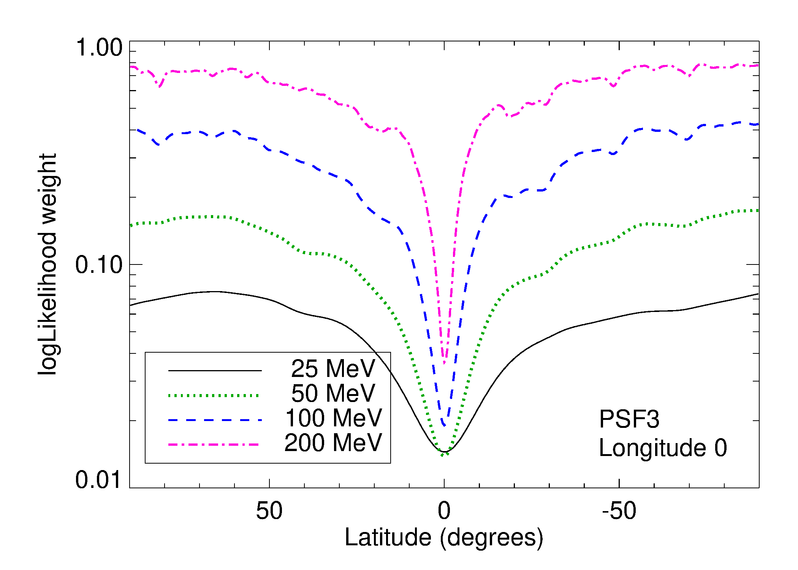
图注：在25、50、100和200 MeV时，对数似然权重随纬度的变化；纬度0度对应银河中心方向。来源：Fermi-LAT合作组，2FLE论文原图2（arXiv:2610.18972v1）。
怎么看这张图：比较25、50、100、200 MeV曲线。低能和强弥散区权重较低，显示系统误差进入了源检出；这不是天空实际流量的纬度分布。 解释低能目录区别于简单计数累积的核心方法。
来源与置信度：arXiv HTML；source verified；https://arxiv.org/html/2610.18972v1/Weights_2FLE_PSF3.png
图4：从TS曲面得到源位置和95%误差椭圆
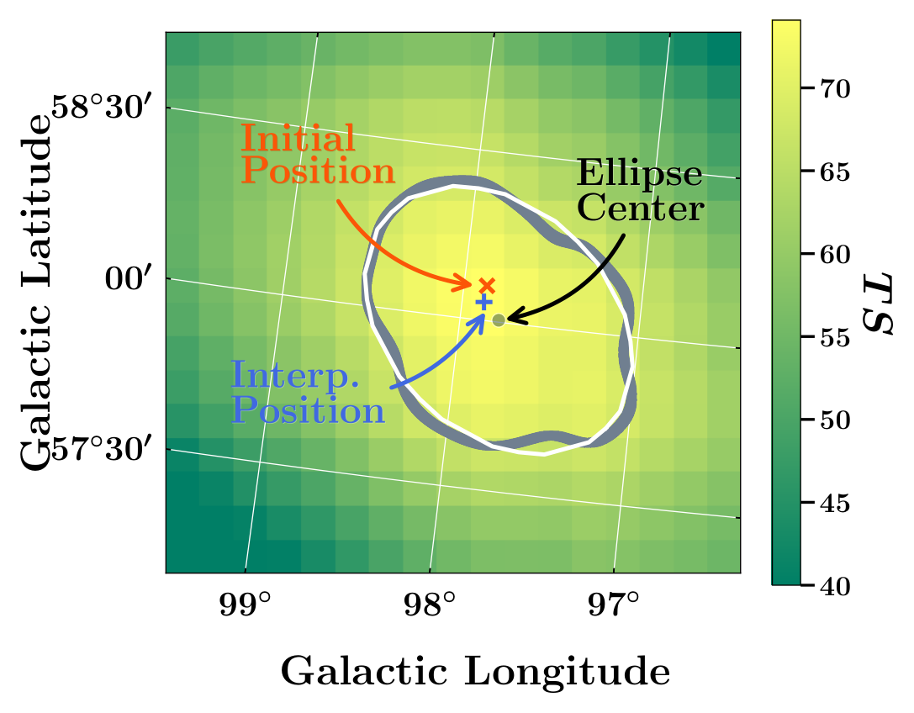
图注：利用ΔTS插值确定源位置及误差区域的示例。背景为局部TS图，峰值74；橙叉为fermipy初始位置，蓝加号为在更细子网格上插值得到的TS峰。灰色锯齿线为ΔTS=5.99的95%边界，白线为拟合椭圆，灰点为椭圆中心。后续系统误差校准另见正文。来源：Fermi-LAT合作组，2FLE论文原图4（arXiv:2610.18972v1）。
怎么看这张图：橙叉是初始位置，蓝加号是插值峰，灰色等值线和白色椭圆对应定位不确定性。多个光子的中心定位精度可以优于单光子PSF，但不能据此判断两源分辨率。 将位置精度、PSF与延展三个易混概念分开。
来源与置信度：arXiv HTML；source verified；https://arxiv.org/html/2610.18972v1/ts_interpolation_ex.png
图9：谱指数、流量与谱形选择效应
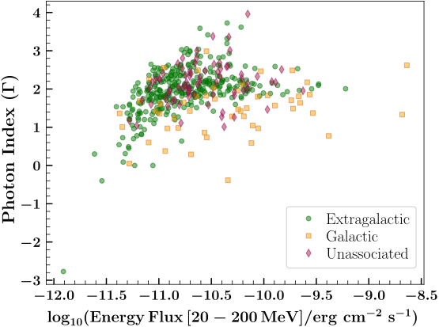
图注：2FLE源的光子谱指数与20–200 MeV能量流量。河外源为绿色圆点，银河系源为橙色方块，未关联源为紫色菱形；左上角缺少源反映灵敏度对谱指数的依赖。来源：Fermi-LAT合作组，2FLE论文原图9（arXiv:2610.18972v1）。
怎么看这张图：绿色圆点、橙色方块和紫色菱形分别表示河外、银河系和未关联源。左上角缺源说明软谱低流量对象更难入表，分布差异不能直接转成总体丰度差异。 同时展示主要源群结果和明确的观测选择边界。
来源与置信度：arXiv HTML；source verified；https://arxiv.org/html/2610.18972v1/2FLE_photon_index_vs_flux_egal_gal_unass.svg
图17：一个LHAASO重合候选的MeV至PeV能谱
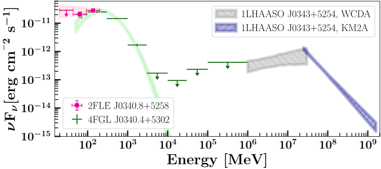
图注：2FLE J0340.8+5258从20 MeV到1.6 PeV的谱能量分布。紫红色方点为2FLE子能段数据，4FGL数据取自4FGL-DR4；阴影为根据最佳拟合参数得到的1σ范围，紫红、绿色分别为2FLE和4FGL，灰色反向斜线和蓝色正向斜线分别为LHAASO WCDA与KM2A。LHAASO参数取自Cao等首个源表。来源：Fermi-LAT合作组，2FLE论文原图17（arXiv:2610.18972v1）。
怎么看这张图：先辨认不同目录及其1σ拟合带，再看低能与甚高能结构。各段并非严格同时观测或联合物理拟合；位置重合和谱形不能单独证明同一加速器或强子起源。 与用户LHAASO/LACT偏好直接相关，同时展示目录关联的物理解释边界。
来源与置信度：arXiv HTML；source verified；https://arxiv.org/html/2610.18972v1/LHASSO_J0343.svg
强相关工作
Principe等的1FLE（2018）使用8.75年、31.6–100 MeV数据和PGWave小波方法，收录198个超过3σ的源。2FLE延长时间、扩至20–200 MeV并改用似然流程，总数450不能简单解释为源群真实增加一倍；统计阈值、背景处理和能段同时改变。两表有166个位置匹配，未匹配的旧源还可能受灵敏度、混叠和背景差异影响，不能仅因缺席判定原检出错误。
4FGL-DR4为2FLE提供高能交叉匹配与类别关联，但不是相互独立的全新验证样本：观测数据时间与能段相关，部分物理类别直接由4FGL继承。LHAASO首个源表则提供TeV至PeV的空间及能谱参照，二者能量跨度很大、延展和背景不同。恰当的下一步是为特定重合区域作空间模板、时间和多波段一致性检验，而不是用位置包含关系代替关联显著性。
同一事件 / 同类源线索：
- https://arxiv.org/abs/2610.18972
- https://arxiv.org/html/2610.18972v1
- https://fermi.gsfc.nasa.gov/ssc/data/access/lat/2FLE/
相似工作：
- https://doi.org/10.1051/0004-6361/201833116
- https://arxiv.org/abs/2307.12546
- https://doi.org/10.3847/1538-4365/acfd29
基础理论 / 方法工作：
相反观点 / 张力线索：
（未提供）
2. Search for High-Energy Neutrinos from Infrared Flares
- 来源：arXiv / astro-ph.HE
- 链接：https://arxiv.org/abs/2610.20163
- 作者：R. Abbasi, M. Ackermann, J. Adams, J. A. Aguilar, M. Ahlers, J.M. Alameddine, S. Ali, N. M. Amin
- 公告 / 来源日期：2026-10-15
- 阅读层级：重点精读
- 评分：novelty 8/10，importance 8/10，relevance 10/10，final 9.70/10
- 推荐理由：393北天红外耀发与10年IceCube时间叠加并给人口贡献限上，直接约束吸积爆发现象中微子来源；外推完备性和谱形条件需精读。
中文题目：393个红外耀发未显现累积中微子信号：目录限上如何走到有条件的2.7%
做了什么：一次可见光耀发之后，周围尘埃会吸收能量、以红外重新辐射，形成延迟的“尘埃回声”。几个曾与IceCube警报配对的核区瞬变都有这种现象，因此值得检验：红外明亮的吸积耀发是否普遍伴随高能中微子。作者从Flaires红外目录选出393个满足时间、赤纬及物性要求的源，使用2011—2021年十年IceCube上行缪子径迹，把每个源红外峰值之前的一年设为信号窗口，再按红外全波段辐射能量面密度加权，联合检验所有源的微弱信号。空间、能量和时间共同区分信号与背景，分析不限于少数高阈值实时警报。
结果没有显著超额：检验统计量为0，最佳信号数为0，论文报告的局部p值为0.998。随后作者先求目录的90%置信水平通量限上，再假设相同内禀中微子谱与光度的标准烛光人口，借用外部TDE体积发生率和红移演化外推。由此在100 TeV处，谱指数1、2、2.5对应的弥散单味中微子贡献限上分别为0.14%、3.5%、2.7%。这些是有源选择、谱形及人口假设的约束，不是对所有红外耀发或全部潮汐瓦解事件的无条件排除。
为什么重要：过去少数“耀发与一个中微子警报相遇”的故事，可能提示新机制，也容易受候选挑选、定位更新和小样本波动影响。本文把问题改成预先定义的源族能否在完整径迹数据中积累出信号，而且三个历史候选都不在最终样本中，因此是在检验机制能否推广到更广人口。较强的新信息是没有看到这种普遍累积，以及对“许多尘埃丰富事件都以高效率产生中微子”的定量压力。人口外推和硬谱模型效率限上则比目录零结果多一层假设，解释强度必须分开。
理论 / 观测 / 仪器方法价值：观测方法上，可借鉴用所有源都有的红外峰值定义时间锚、用相对辐射能量设源权重，再把逐事件方向、能量和时间放入统一似然。其价值是让许多单独不可见的源共享一个检验，而非逐个试到显著为止。理论上，可以将目录限上与具体粒子产生模型按同一能量、单味口径比较，约束“机制活跃比例×耗散到质子的效率”。实际应用必须同时给出源目录选择函数、有效面积、时间模板和人口率；缺任一项，直接把源数增大或把目录限上除以完备度都不可靠。
为什么应该关注：对天体中微子研究，本文说明电磁标记与粒子产额之间的映射本身可以被数据检验：红外回声既可揭示被尘埃遮蔽的吸积，也可能参与提供质子相互作用的光子场，但“看见回声”不保证有足够高能质子或足够高相互作用效率。值得继续关注的是，采用随时间演化的物理谱、不同源亮度分布和更完备样本后，哪些受限结论仍稳定；同时，新的警报定位会改变个别关联的可信度，不能继续把原来的三个对象作为已经确认的TDE中微子源来校准模型。
展开详细解读：文章讲解、背景、理论、重点章节、图表与相关工作
文章详细讲解
科学问题是红外尘埃回声所标记的核区瞬变，究竟只是少数警报的偶然近邻，还是一个能贡献相当弥散中微子背景的源族。红外选择的优势是能看到可见光受遮蔽的事件，并覆盖较长的历史时间；代价是偏好明亮、尘埃丰富、通过母星系目录筛选的系统。本文称之为TDE候选人口，仍不是每个源都有独立光谱证明恒星确已被黑洞潮汐撕裂。
作者采用Flaires目录和完整的北天径迹样本，而不是拿三个著名对象再次做关联。母目录823个尘埃回声样耀发，经分类和尘埃物性要求保留528个红外耀发，再要求落在十年数据覆盖内、赤纬高于负5度等，最终393个。AT2019fdr的宿主未进入母星系样本；AT2019aalc未通过区分孤立回声与随机AGN变异的筛选；AT2019dsg虽被目录恢复，却为避免事后选源偏差而主动排除。这三种原因不同，不能笼统称作都被观测否定。
具体检验把每个源的时间信号设为止于红外峰值的一年平顶窗口，源权重取全波段fluence的相对值。若某事件既靠近一个源、能量较符合天体物理谱、又落在该源时间窗内，信号密度相对背景才会提高。源族共享幂律谱指数，拟合总信号数与该谱指数；无显著信号时用注入模拟确定各谱假设的通量限上。观测TS等于背景分布中位数，因此本次上限恰好与作者定义的灵敏度一致，不能把这种相等当成一般规律。
最直接结果是这393个源的加权堆叠未显示超额；2.7%并非这一检验无需转换就输出的数字。作者把目录限上按最亮参考耀发UGC 11487的归一化权重、赤纬响应和时长转换为有效单源限上，再由距离及谱相关红移修正得到参考光度，作为标准烛光人口的光度。该转换还要采用外部局部TDE率和宇宙演化。它产生有价值但条件明确的源族约束，不能与直接测出的“宇宙中这类源真实贡献”混为一谈。
主要边界来自源目录、时间模板、谱形和人口外推四个层面。Flaires相对其他红外样本的估计完备度约30%—50%，严格纯度筛选也会遗漏真实事件；固定一年且只在红外峰前的窗口未覆盖所有可能延迟规律；真实中微子谱可以有峰和截断，而非无界幂律；所有源相同内禀光度也可能不成立。下一步应针对这些具体环节建模，不能仅凭零结果宣称尘埃回声机制不存在，或所有TDE都不是重要粒子源。
关键结果是怎么做出来的
第一步是建立不会由中微子数据反过来挑选的电磁样本。红外母目录从约百万条变异光变中识别回声样耀发，再排除已分类AGN并要求可估尘埃物性。最终还受IceCube观测时间和赤纬覆盖限制。图1中银道附近的缺口主要是拥挤场中星系分类与巡天覆盖带来的选择，不能把393除以全天面积就得到真实发生率；最终样本也不能自动视为纯TDE。
第二步是把电磁信号变成统计模板。每个源用红外峰值作为统一可得的时标，取峰前一年；fluence来自逐历元黑体拟合后对耀发积分。这个权重假设中微子产额与总辐射能量成比例，把高预期产额源赋更大贡献。目录的已接受勘误将光度和fluence统一修正约两倍，但本文只使用相对fluence权重，统一缩放会在归一化中抵消；这不意味着任意源间的不同修正也会抵消。
第三步是以探测器模拟建立信号与背景。信号能量分布由加权的天体物理中微子模拟得到，背景包括大气中微子和残余大气缪子；前者使用MCEq、GST宇宙线谱及SIBYLL 2.3c，后者用CORSIKA、H4a宇宙线模型及相同强子模型。似然同时使用空间、能量、时间，不把任意几何重叠直接计为信号。原文以背景伪实验的TS分布标定概率，不能擅自替换成固定自由度的卡方换算。
第四步是查看实际拟合而非只读人口百分比。最优信号数为0，TS为0，局部p值0.998，因此没有支持源族信号的统计证据。这个p值不是背景假设为真的概率，也不是“99.8%证明不存在”。这里检验的是一个预先固定的加权源目录；393个源不是393个独立发现试验。文中没有给一个可直接宣称的额外全局发现显著性，且三个谱指数主要用于限上场景，不能把它们当三次独立发现来相乘或挑最小p。
第五步是在固定谱形下标定信号强度。作者注入信号、计入各源权重和依赤纬变化的有效面积，调节强度，寻找90%的伪实验超过背景TS中位数的位置，作为灵敏度。随后求90%置信水平上限；本次实际TS位于背景中位数，所以上限与灵敏度重合。谱指数1的情形是为高能质子与红外光子作用所可能产生的硬中微子谱提供基准，不等于论文已验证这种幂律完整描述真实物理模型。
第六步才进入人口层面。作者采用局部体积TDE率每立方兆秒差距每年约1.3×10的负7次方，标示统计误差约0.2×10的负7次方；它来自Masterson等的高纯度红外“gold”样本，并非Flaires自身独立测得的体积率。样本有重叠且包含参考源，作者据此借用率归一化，再用Sun等的红移演化得到图2实线。100 TeV处三种谱对应0.14%、3.5%、2.7%，而附录改用不同的下降型演化后，限上相对基线最多变化约2.5倍。这使“直接目录限制”和“模型依赖人口限制”的边界可见。
展开背景、理论、公式、模型和章节导读
背景知识
潮汐瓦解事件是恒星靠近超大质量黑洞后被差异引力撕裂、部分碎片回落并产生暂态吸积的事件。辐射可能来自盘、盘冕、外流或喷流，观测波段与遮蔽程度不同，不能把一切星系核耀发都等同于同一种TDE。红外样本中的候选尤其需要区分暂态供能与活动星系核长期随机变异，目录分类和纯度筛选因此属于物理解释的一部分。
尘埃回声类似把一次短波闪光延迟地重新播放：尘埃吸收可见光/紫外等辐射后升温，再以较低能量的红外光子释放。光走到尘埃再到观测者的路径，以及原始供能持续时间，共同展宽红外光变。因此峰值延迟既涉及几何也涉及光变卷积；不能仅用“红外晚出现”就证明中微子一定在尘埃处产生。回声也可能只是标记同一吸积事件的观测工具。
中微子可由高能质子与气体或光子相互作用、通过带电介子衰变产生。若靶光子更软，需要更高能的质子满足产生阈值；红外光子靶的模型因此可能预言偏高能、较硬的中微子分布。粒子注入、磁约束、靶场随时间变化与逃逸都会影响产额。把红外fluence用作权重是可检验的经验联系，并不单独决定上述微观物理。
IceCube的径迹主要由缪子中微子带电流相互作用产生的缪子留下。长径迹的方向优于级联，适合点源搜索；在南极看北天，上行事件先穿过地球，大部分从大气直接下来的缪子被阻挡。但大气中微子仍能穿透，探测响应也随赤纬和能量变化。此次数据使用赤纬高于负5度的“北天”定义，不是整个天空等灵敏的样本。
少数亮源的单事件关联与弥散背景起源属于不同问题。某个耀发可能偶尔产生可见中微子，而整类源仍只贡献小比例弥散通量；反之，许多极弱源也可能共同构成背景而没有单源发现。本文用堆叠回答后一类累积问题，并在不重复使用原三候选的情况下检验机制推广。更新后的警报方向使原有配对不再落在相同的定位区域内，这削弱原先个例动机，却不构成独立证明所有同类机制都失败。
基础理论 / 方法脉络
首先要把“源在何时何地产生什么能量分布”转成“探测器会记录到什么事件”。空间信号分布由方向重建与角误差决定，能量分布还要折叠中微子相互作用、缪子传播和事件筛选，时间分布则采用源的窗口。三个部分的乘积是本文的PDF因子化假设；它是有效统计描述，并不保证所有真实仪器相关性都已严格分离。
堆叠的关键不是扩大每个源的误差圈，而是把许多源对应的归一化信号密度以预先给定的权重相加。这样只拟合总体信号强度，减少“逐源找一个高波动”的自由度。代价是源权重或共同谱形错了时，真实信号可能被不恰当地分散或稀释。若只有罕见子类有效率很高，目录平均模型未必是最佳搜索模板。
信号数与谱指数承担不同任务：前者改变事件属于源族的总比例，后者改变高、低能事件的相对权重。由于大气背景通常较软，高能事件常能提供更大的信号/背景比，但极高能上行中微子又受地球吸收及探测器接受度影响。不能简单说能量越高权重无限越大；要以相应有效面积和模拟响应决定。
频率学上限回答的是固定谱形和检验构造下，哪些信号强度会在重复实验中被排除。它既不同于“最可能光度”，也不同于贝叶斯后验有90%概率低于某值。灵敏度则是对一批假想背景实验给出的典型排除能力；只有本次TS与背景中位数相同，作者给出的观测上限才与这一能力相等。
从目录走向弥散背景，必须把每次耀发的产额或参考光度与宇宙体积发生率结合，并累加不同红移。率高且远处源多，同样的单源限上可以允许更大的弥散强度；率随红移快速下降则相反。标准烛光假设把真实亮度分布压缩为一个参考量，来源率、亮度分布与中微子效率之间的退化因而被固定假设部分打破，而不是被数据完全消除。
公式与推导
以下沿“时间与能谱模板→多源混合→似然→事件强度→人口解释”连续展开。论文只编号四个核心方程；下面把其中省略的归一化、有效面积折叠和百分比定义展开为教学步骤，并明确标记，不能把九个展示式误认为论文另有九个独立推导。
先将原文的一年平顶时间假设写明。设第$j$个源红外峰时为$t_{{\rm IR},j}$，$\Delta t$为一年，$t$为事件到达时刻，$H$为阶跃函数：
这是对第3节文字的教学展开，$T$的量纲为时间的负一次方，在完整窗口积分为1。若用秒做$t$，$\Delta t$也要用秒；若窗口遇到数据边界或死时间，实际归一化须与有效观测段一致。原文未逐项公开这些边界实现，不能据此声称已重新验证代码。固定窗结束于红外峰，而非以红外峰为中心，也不扫描每个源的最优延迟。
接着把所有源共用的幂律写成参考能量归一化：
这是第3—4节谱假设的显式写法，$E$与$E_0$取同一单位，$\phi$为微分数通量，$\phi_0$有能量负一次方、面积负一次方、时间负一次方的单位。指数$\gamma$越大，谱越软。100 TeV是比较限上的共同标尺；它不是原文为所有源测出的特征峰，也不使任意能段都具有同样灵敏度。
再用电磁fluence给出相对份额。令$F_{{\rm bol},j}$为第$j$个耀发经全波段积分的能量面密度：
这是对原文“归一化相对权重”的教学说明，不是新增的实测相关定律。$F_{\rm bol}$量纲是能量/面积，权重无量纲，统一两倍校正会消掉。探测器对不同赤纬的接受度仍需在响应与注入过程中处理，不能以为归一化红外权重已等于最终各源的探测事件份额。
有了时间、谱和方向响应，论文式(1)及其后文字把源PDF与总信号PDF连接为：
$x_i$概括第$i$个事件的重建方向、能量、到达时刻及分析使用的重建信息；$M$为393。各PDF须在一致观测变量空间归一化，且与背景$B$具有同样量纲，才能相加。方向更近只提高空间项，若时间或能量不符，总信号/背景比未必很高。
论文式(2)将每个事件看作信号或背景的混合，再对$N$个观测事件连乘：
这里$n_s$是模型中的总信号事件数，$n_s/N$为无量纲混合比例；$M$个天体与$N$个中微子事件不能混淆。提高$n_s$只有在一批事件更像信号而非背景时才会增加似然，并非数一数窗口内事件便得到$n_s$。随后对$n_s$与$\gamma$最大化即可连接到假设检验。
论文式(3)定义相对于纯背景的改进程度：
似然比无量纲。帽号表示最佳拟合，本次$\hat n_s=0$、TS为0；在零信号边界，$\gamma$不再有可测的源谱意义。背景伪实验决定TS的尾概率，不能自动使用平方根TS作为高斯显著性，也不能把$n_s=0$解读成所有源严格零产额。
为把混合强度换成物理通量，需折叠探测器。下式是标准事件数关系的教学展开，概括原文的信号注入与有效面积处理：
有效面积$A_{\rm eff}$的单位是面积，积分后$\mu_s$为期望事件个数，$\delta_j$为源赤纬，观测时间集合为$\mathcal{T}_j$。这里$\phi_j(E,t)$是物理的瞬时微分通量；若窗口内恒定，时间积分带来实际时长。归一化的时间PDF不能直接当无量纲光变因子乘上稳态通量，否则会少一个时间量纲。此式说明同一通量在不同源位置、不同谱或不同时长下不对应相同事件数；所以不能简单把目录通量除以393。作者用模拟求出达到给定90%标准的强度，而不是从$\mu_s=0$直接断言通量上限为0。
对人口，先采用作者的参考源转换与标准烛光、局部发生率及演化假设得到天空平均单味强度$I_{\rm pop}$，再按下式定义相对贡献；这是第4节比较的教学写法：
两者必须同为缪子中微子加反中微子的单味口径，且按相同立体角归一化。$E^2 I$以GeV、平方厘米、秒及球面度的相应单位表达，比例无量纲。对$\gamma=2.5$，本文在100 TeV得到0.027；换能量、换谱、换宇宙演化后不应继续强行沿用同一比例。
最后，把硬谱人口限上与Winter—Lunardini红外机制模型在相同100 TeV标尺比较。其归一化与机制有效比例$\eta$及把吸积功率耗散成加速质子的效率$\varepsilon_{\rm diss}$之积相关，论文式(4)取$\eta=1$得到：
这里把原式的参数退化明确写出：只有在$\eta=1$、机制普遍开启并采用对应谱形与人口标定时，才可称$\varepsilon_{\rm diss}$小于约0.0028；若只有一部分事件开启，限制首先作用于乘积，不能独立测出每个事件的效率。此处是对特定模型归一化的比较，不是由单次相互作用第一性原理算出的普适效率上限。
模型拟合 / 应用方法
实际输入是393个源的位置、红外峰时、bolometric fluence，以及十年径迹的重建量和探测器模拟。各源的位置、时间窗与相对红外权重预先固定；总体似然拟合$n_s$与共同谱指数$\gamma$。原文没有给出可供重建整套分析的逐源全部响应表、所有模拟样本或完整参数轮廓，因此本解读核对的是论文方法与结果，没有声称重新执行IceCube拟合。
背景密度由大气成分模拟建立，信号能量密度由不同幂律权重模拟建立。关键诊断是观测TS在背景伪实验中的位置，以及在各谱假设下做注入后能否达到规定的覆盖/灵敏度条件。论文报告TS=0、$\hat n_s=0$及$p=0.998$，没报告一个值得解释的最佳源谱。不能替作者编造残差图、谱指数误差或单源排名，也不能把示意的物理谱当成数据拟合成功。
限上阶段固定γ=1、2或2.5，改变注入强度，保留各源权重和探测器接受度。硬谱与软谱在IceCube敏感能段内提供不同事件能量分布，因此100 TeV归一化相同也不代表同一探测事件数。图2只在各自主要敏感能段画线，这是阅读约束时必须保留的范围；不应把直线无限外推，再对没有灵敏度的能段宣称严厉排除。
人口阶段引入了比似然更多的固定条件：参考最亮源UGC 11487、其距离和时长、共享内禀谱与光度、外借局部TDE率以及Sun等演化。外借率与Flaires有重叠来源，其标示率误差不等于整个外推的总误差。30%—50%的目录完备度也不是一个可以普遍乘上的单一系数，因为缺失可能关联亮度、尘埃、红移及AGN分类；论文没有测得足以唯一解除这些选择退化的光度函数。
原文做了一个明确的人口稳健性检查：令率演化随红移按(1+z)的负m次方下降，并改变m，图3显示人口限上可相对基线变化至约2.5倍。它检验的是所试演化族，并没有同时扫描所有亮度函数、时间窗或物理谱。未来可将这些量放入层级人口推断、以物理模型替换单幂律，但这是后续方向；本文没有完成这样的全参数联合拟合，也不能把特定m下更严限上当成更高发现显著性。
重点章节 / 结果段落怎么读
-
第1节：先分清三条逻辑线——历史候选提供研究动机、红外回声提供选源与时间标记、具体光子靶模型提供可能的中微子谱。三者相关但不能相互替代；随后检查定位更新怎样改变历史关联。
-
第2节与图1：逐步跟随823、528到393的筛选，记录赤纬和时间范围，并核对三个历史对象为何未入样。只有先明白样本代表谁，后面的“源族贡献”才有意义。
-
第3节式(1)—(3)：沿单源PDF、源权重、混合似然、TS读取。重点是时间窗终点在红外峰、所有源共享谱形，以及电磁fluence与预期中微子产额成比例这一假设。
-
第4节与图2、表1：先读TS=0和信号数为0，再读模拟定义的灵敏度/限上，最后才到参考源与人口外推。比较目录虚线与人口实线，避免跳过了率密度、距离与演化假设。
-
第5节、式(4)与附录图3：把2.7%的条件和约0.0028的机制效率条件分别列清。后者需要硬谱模型、统一归一化及η=1；图3展示另一种源率演化会怎样移动人口限上。
关键图表与解读
图1：393个红外耀发的样本与权重
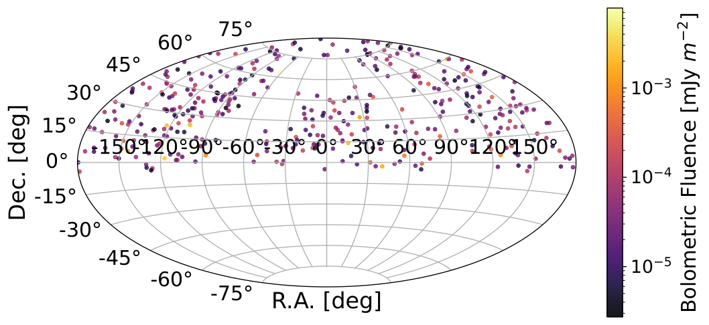
图注：本次分析393个北天源的赤道坐标天图。颜色表示各源总的全波段辐射能量面密度（fluence），分析以此作为似然中的相对源权重。银道附近源密度下降反映构建Flaires目录的母光学与红外巡天覆盖限制：在拥挤恒星场中，恒星/星系分类变得不可靠。
怎么看这张图：先看银道附近的缺口，再看颜色跨度。此图说明被堆叠的是有明确选择函数的一组源，且各源在检验中的贡献不同；空白处不能解释成那里没有吸积耀发。 显示分析实际覆盖与非均匀源权重，避免把北天选择误认为全天完备人口。
来源与置信度：arXiv HTML；source verified；https://arxiv.org/html/2610.20163v1/skymap.png
图2：目录限上与人口外推的区别
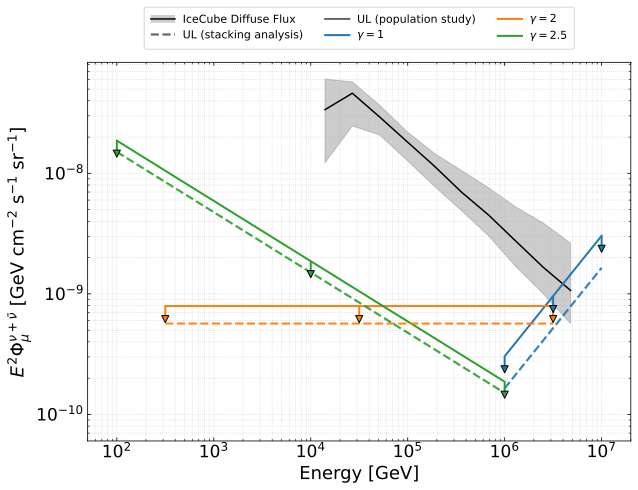
图注：北天红外耀发的天空平均缪子中微子通量限上，分别假设谱指数为1、2和2.5。虚线为目录堆叠分析所得限上，实线为人口研究所得限上；每种谱指数只画出分析最敏感的能量范围。灰带为IceCube测得的弥散天体物理中微子通量的95%置信区间，并采用单味归一化。
怎么看这张图：比较同一谱指数下的虚线与实线：从目录到宇宙人口需要额外假设。2.7%来自100 TeV处谱指数2.5的实线与弥散通量比较，不能读成全能段、全体TDE都受同一个百分比限制。硬谱曲线也只应在标出的有效能段解释。 主结果，区分直接目录堆叠限上与依赖率密度/演化的弥散人口限上。
来源与置信度：arXiv HTML；source verified；https://arxiv.org/html/2610.20163v1/population_study.svg
图3：源率宇宙演化带来的模型依赖
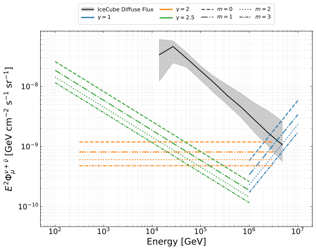
图注：假设谱指数为1、2和2.5时，北天红外耀发的缪子中微子通量限上。替代的宇宙源率演化写为f(z)=(1+z)的负m次方，其中z为宇宙学红移，m控制演化强度；不同线型表示不同m。灰带为IceCube弥散天体物理中微子通量的95%置信区间，采用单味归一化。
怎么看这张图：固定谱指数，再比较不同演化线型。更快随红移下降的源率使远处源贡献更小，同样的近邻源亮度限上对应更低的弥散上限。正文指出所试演化相对基线可改变限上约2.5倍；这属于人口解释的条件变化，并非检出信号的误差条。 直接展示人口外推的关键系统限制，补足单一2.7%数字掩盖的条件。
来源与置信度：arXiv HTML；source verified；https://arxiv.org/html/2610.20163v1/population_model.svg
强相关工作
与本文直接相接的是Flaires目录工作：它以WISE光变寻找回声样核区瞬变，提供本文的位置、峰时和物性。目录收集广泛不等于严格人口完备，本文的528与393还经过自己的筛选。与之对应，Braun等的无分箱点源方法提供用方向与能量区分信号/背景的统计基础；本文再加入源特定时间窗和多源权重。新增信息来自扩大样本、完整径迹数据及具体预定义模板，不是首次提出堆叠思想。
理论比较对象是Winter与Lunardini的三候选解释，其不同靶光子场模型解释延迟，并在当时的关联基础上讨论总体通量。本文主要检验该机制能否从少数校准个例推广到广泛红外候选；它不是对三候选逐个重测，也未将不同物理谱全部联合拟合。另一个关键背景是IceCat-2更新重建，它说明警报方向与覆盖区会随重建改进而变化。本文据更新定位强调原个例已不再相容，但“关联动机被削弱”和“某物理机制完全被排除”仍属不同结论。以上链接已与保存全文参考文献身份核对，并经官方arXiv页面/检索验证；未把会议摘要当成完整源族发现。
同一事件 / 同类源线索：
相似工作：
基础理论 / 方法工作：
相反观点 / 张力线索：
（未提供）
相关简报
1. LHAASO Constraints on New-Source Cosmic Rays:Abundance Scenarios and Injection Spectral Indices
- 来源：arXiv / astro-ph.HE
- 链接：https://arxiv.org/abs/2610.20477
- 作者：Xu-Lin Dong, Pei-Pei Zhang, Qi-Ling Chen, Shu-Wang Cu, Yi-Qing Guo
- 公告 / 来源日期：2026-10-15
- 阅读层级：相关简报
- 评分：novelty 8/10，importance 7/10，relevance 10/10，final 9.35/10
- 推荐理由：用LHAASO谱与lnA辨别新源丰度和注入谱，揭示改善拟合与物理不自然谱差的张力，给元素分辨预言；有限模型比较列简报。
中文题目：LHAASO宇宙线成分能区分新源丰度吗？更好的质量拟合仍有注入谱退化
问题、方法与结论：微类星体若加速伴星物质，元素比例可能不同于超新星遗迹扫过的星际介质。作者在空间依赖传播模型中加入低截断A类与高截断B类源，比较B类采用遗迹式重元素增强丰度、或OB星表面丰度两种情形。先用B/C与分元素低能数据标定传播及A类，再拟合质子、氦和全粒子谱，最后以平均对数质量检验。QGSJET-II-04数据下，两种情形都能描述总谱，但质量检验的χ²/自由度从157.91/20降至55.23/20，OB星情形相对较好。
意义与贡献：意义在于指出总能谱相似时，质量成分仍能区分假设。但这没有确认微类星体是高能组分的真实来源，也未证明其伴星丰度正确。较好情形仍有明显拟合偏差，并需让不同组分的注入指数缺乏统一规律。
可借鉴之处：可借鉴“能谱约束、成分另作检验”的分步思路，并对QGSJET-II-04、EPOS-LHC和SIBYLL 2.3d三种强子相互作用模型复查。预测的判别信号是两源组分过渡区的分元素谱形：第二种情形下Mg、Si、Fe比He、C、O更软，来自组分叠加的不同凹陷深度。
局限与关注点：限制是把B类C至Fe的注入谱指数统一，再调整氦等组分；丰度与注入谱仍退化，真实源的空间、时间与物质混合也被简化。分元素预测不等于已测得重核加速更软，且注入谱与到达地球的能谱必须区分。需用膝前精确分元素测量检验，而不能仅凭大Δχ²换算发现显著性。
图3：相似总谱下的成分差异
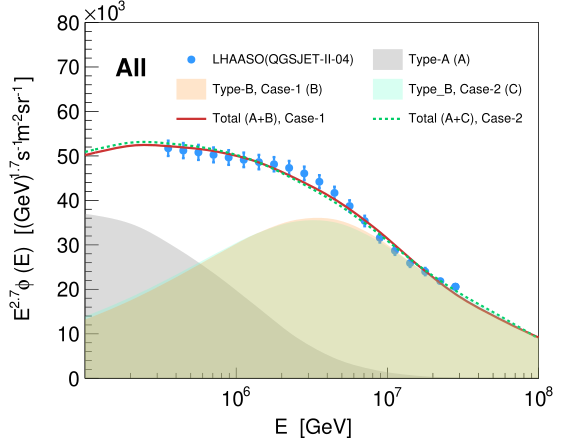
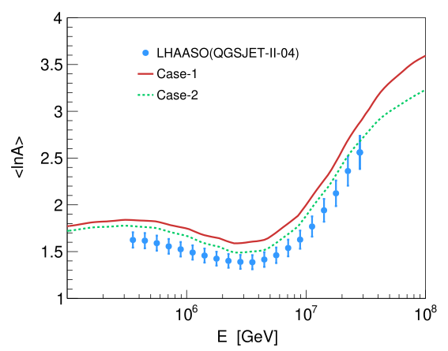
图注：模型的全粒子能谱（左）和平均对数质量〈ln A〉（右）与LHAASO基于QGSJET-II-04强子相互作用模型所得测量的比较。蓝点为LHAASO数据；灰色带表示A类源贡献，红色和青色带分别表示情形1和情形2的B类源贡献。红实线和绿虚线分别表示两种情形中A、B类贡献的总和。
怎么看这张图：先看两种丰度情形都能描述左侧总谱，再比较右侧成分。情形2的右图偏差较小，但其χ²为55.23/20，且需要调整注入谱指数。图支持当前假设下的相对优劣，不足以认定真实宇宙线已测出微类星体伴星表面丰度。 集中展示能谱拟合与质量成分检验的不同作用，是两种丰度情形比较的核心。
来源与置信度：arXiv HTML；source verified；https://arxiv.org/html/2610.20477v1/All1.svg；https://arxiv.org/html/2610.20477v1/lna1.svg
2. GRB 181201A: Spectropolarimetric Constraints on Prompt Emission and Magnetic Field Structure
- 来源：arXiv / astro-ph.HE
- 链接：https://arxiv.org/abs/2610.20580
- 作者：Dhruv S. Bal, Nikita S. Khatiya, Philippe Laurent, Diego Götz, Dieter H. Hartmann, Ramandeep Gill
- 公告 / 来源日期：2026-10-15
- 阅读层级：相关简报
- 评分：novelty 7/10，importance 8/10，relevance 9/10，final 9.05/10
- 推荐理由：INTEGRAL GRB时间积分及分时偏振结合光谱给磁场几何约束，真实测量有价值；高PD及模型排他性取决统计和仪器系统项，列简报。
中文题目：GRB 181201A的瞬时伽马偏振：高偏振支持什么，又不能确定什么
问题、方法与结论：作者重分析INTEGRAL/IBIS对GRB 181201A的档案观测，用双层探测器中的康普顿散射方位角分布测量200–800 keV瞬时辐射的偏振，并同步拟合20–200 keV能谱。第二段辐射贡献了主要偏振信号；三个高信噪时间窗的偏振度约八成，偏振角中心值随时间变化。能谱呈硬到软演化。作者据此讨论少数局域有序磁场斑块主导的同步辐射，以及特定视角下的康普顿拖曳情景，尚不能唯一选定机制。
意义与贡献：偏振提供了总光谱之外的几何信息：多个随机磁场区域会相互抵消，若高偏振可靠，就需要少数具有相干方向的发射区占主导。本文为IBIS档案增加一个可研究的高偏振暴，但对普通低偏振光球模型的压力依赖具体模型与响应校准，不能据此排除全部光球辐射或证明整个喷流的磁场结构。
可借鉴之处：可借鉴的是把光变、散射角调制和能谱放在同一时间窗检查的流程。作者采用10秒窗口、每5秒滑动，依成像信噪比筛选可用区间，再用GEANT4模拟的全偏振调制因子把调制幅度换成偏振度。实际复用时应进一步把能谱、偏振与背景联合前折叠，并保留相邻窗口的统计相关性。
局限与关注点：该暴约11°离轴；当前使用模拟调制因子，尚无专用完整偏振响应矩阵，调制因子的系统误差估计约5%。能谱与偏振能段不重叠，不能直接用低能谱斜率计算高能同步辐射的最大偏振。滑动窗口共享事件，偏振角变化不能当成多次独立显著检出；成像信噪比也不是偏振显著性。作者承认改进流程后绝对偏振度可能变化，因此磁场解释应保留条件。
图4
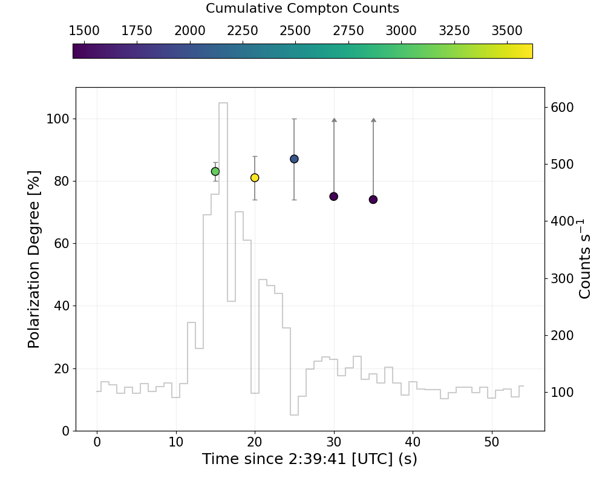
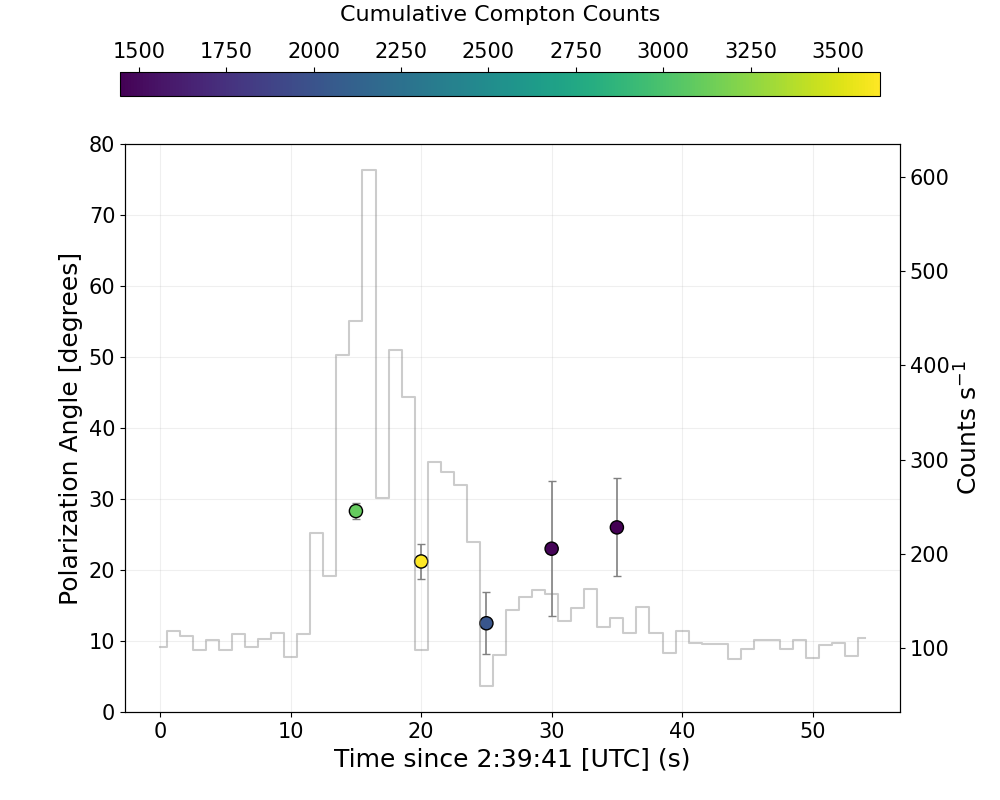
图注：GRB 181201A第二段辐射的偏振随时间变化。左：偏振度；右：偏振角。颜色表示累计计数，背景浅灰阶梯线为康普顿事件光变。各点来自10秒宽、间隔5秒的滑动时间窗，因此相邻点并不独立。
怎么看这张图：先看计数较多的三个时间窗及其误差，再比较偏振角的中心值变化；后段统计较弱且邻点共享事件，不能把视觉趋势当作多次独立显著检出。高偏振还需连同离轴响应与谱偏振能段差异理解。 同时呈现高偏振及角度演化这两条核心证据，适合解释作者的磁场斑块判断与统计限制。
来源与置信度：arXiv HTML；source verified；https://arxiv.org/html/2610.20580v1/PD_evolution_new.png；https://arxiv.org/html/2610.20580v1/PA_evolution_new.png
3. Correlation of galactic very-high-energy gamma-ray sources detected by LHAASO with high-energy neutrinos
- 来源：arXiv / astro-ph.HE
- 链接：https://arxiv.org/abs/2610.19649
- 作者：Long-Yu Zhang, Kai Wang
- 公告 / 来源日期：2026-10-15
- 阅读层级：相关简报
- 评分：novelty 6/10，importance 7/10，relevance 10/10，final 8.75/10
- 推荐理由：LHAASO90源与IceCat348轨迹的明确零相关结果及纯强子通量上界贴合重点；方法增量有限仅简报，不将最佳p值写成关联发现。
中文题目：LHAASO源与IceCube警报的空间重叠：尚未发现显著关联
问题、方法与结论：百TeV以上伽马射线既可能由强子碰撞产生，也可能来自电子辐射；伴随中微子是区分机制的重要线索。作者将第一版LHAASO目录的90个源与IceCat-1的348个径迹警报交叉检查，要求中微子能量至少100 TeV，并按定位面积筛选。基线保留202个事件，随机化赤经10000次后，全部源、KM2A和WCDA样本的重叠计数尾概率分别为0.237、0.312和0.115，均未显示显著关联。另将源伽马谱全部归于质子碰撞，估计乐观中微子通量；多数重叠对仍难解释对应警报。
意义与贡献：贡献是把几何重叠与随机重叠概率、通量自洽性分开检查，提醒读者：天图上碰在一起并不等于发现了银河系中微子源。结果约束的是这一目录、警报样本与统计方法，并未排除LHAASO源族产生中微子。
可借鉴之处：可借鉴的是保持赤纬、误差区域不变，只打乱赤经构造背景，并在15和20平方度定位阈值下复查。三个源样本互相重叠，不能合并成独立证据。全强子伽马归一化提供有用的乐观通量基线；若存在轻子贡献，预测中微子还会减少。
局限与关注点：主要限制是只用高阈值警报，没有完整径迹数据；计数检验未充分利用逐事件能量和方向概率，银河弥散背景也会混入。文中由单个事件和忽略背景的泊松假设给出的通量区间，不能读成特定源的发现显著性。更有效的下一步是采用更新重建、完整数据及源形态/弥散模板的似然检验。
图2：空间重叠在随机天空中是否罕见
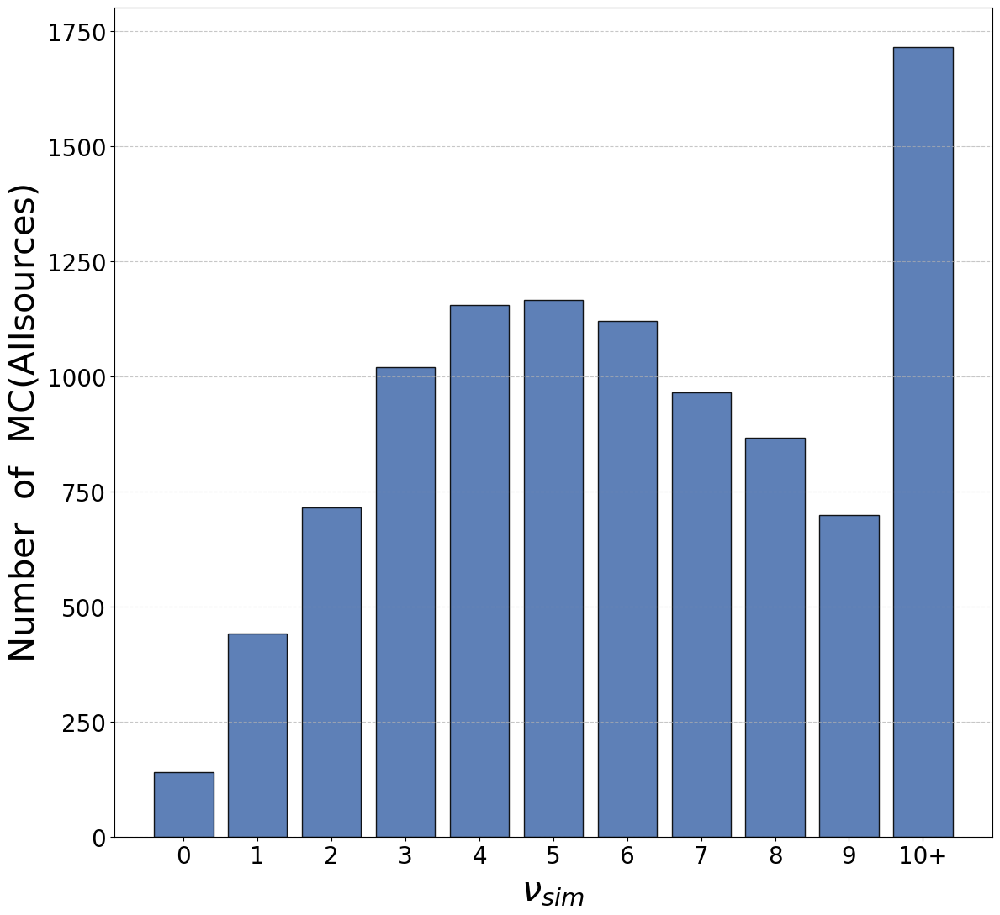
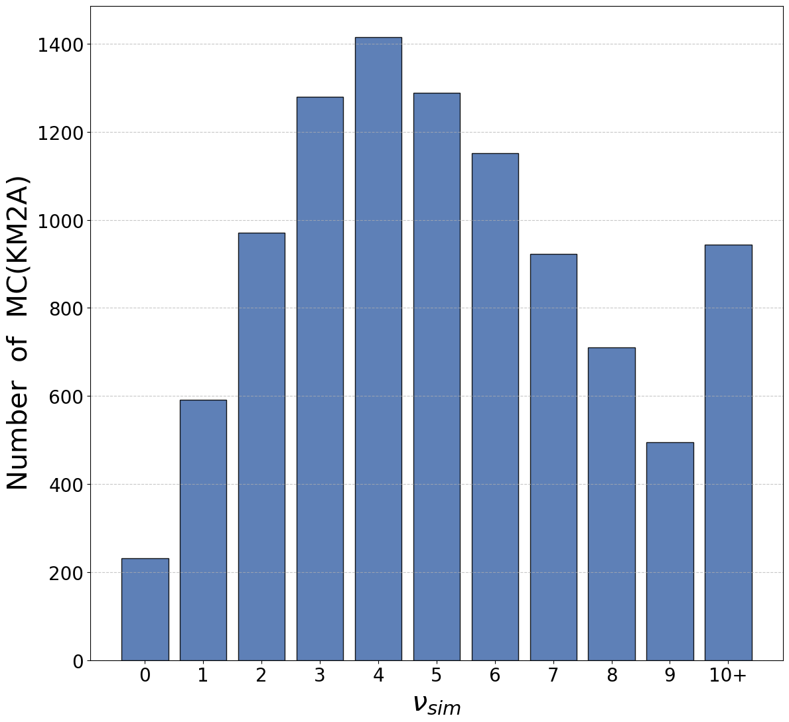
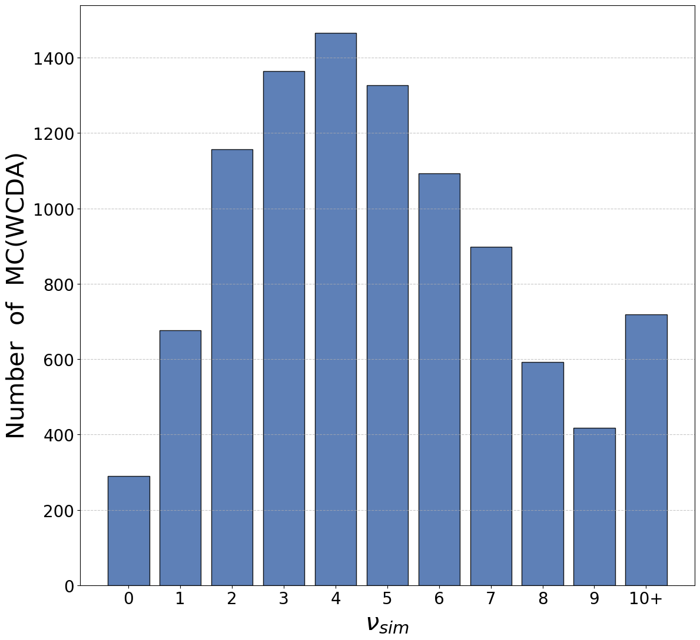
图注：对筛选后的IceCat-1样本进行10000次蒙特卡洛模拟的结果，筛选要求90%定位区域面积不超过10平方度、中微子能量至少100 TeV。三个面板分别为全部LHAASO源、KM2A源与WCDA源，实际重叠计数依次为9、7和9。
怎么看这张图：把真实计数放回随机重叠分布，三组尾概率分别为0.237、0.312、0.115，均不稀有。三个源样本互相重叠，不能将这些p值当作三次独立证据；图中重叠次数也不是确认的源—中微子关联数。 直接显示本文的无显著关联结论，优先于容易制造视觉关联印象的天区重叠图。
来源与置信度：arXiv HTML；source verified；https://arxiv.org/html/2610.19649v1/spectrum/MC.png；https://arxiv.org/html/2610.19649v1/spectrum/MC-KM2A.png；https://arxiv.org/html/2610.19649v1/spectrum/MC-WCDA.png
4. Spinformation: do gravitational-wave events carry information beyond effective spins?
- 来源：arXiv / astro-ph.HE
- 链接：https://arxiv.org/abs/2610.18973
- 作者：Cailin Plunkett, Jack Heinzel, Noah E. Wolfe, Davide Gerosa, Salvatore Vitale
- 公告 / 来源日期：2026-10-15
- 阅读层级：相关简报
- 评分：novelty 8/10，importance 8/10，relevance 7/10，final 8.65/10
- 推荐理由：量化有效自旋之外的信息损失并检验噪声实现，直接约束个体自旋的可解释范围，是有实际诊断的推断方法推进。
中文题目：单个黑洞自旋测量多了多少信息？GWTC-5大多数事件可由两种有效自旋概括
问题、方法与结论：作者从259个GWTC-5双黑洞事件出发，把各向同性自旋先验按事件的有效自旋χeff、质量比q，以及另加进动参数χp进行条件化，再与完整后验比较KL信息差。在0.25比特经验门槛下，48例含超出χeff的额外信息，加入χp后仅10例仍超门槛；这量化的是现有观测的压缩损失，不能理解为真实双黑洞自旋只有二维。
意义与贡献：单个黑洞的幅度和倾角更容易对应形成机制，但后验出现结构，不一定表示数据独立测到了这些结构。本文把有效参数已隐含的约束扣除，给判断“额外自旋测量”提供可操作检验。高信噪比也不保证有更多维信息：最响亮的GW250114在加入χp后仅余约0.08比特，GW231123则仍有约2.3比特。
可借鉴之处：信息差针对两颗黑洞幅度和倾角的四维联合分布，始终同时条件化q，主分析不含方位角。作者用分类器估计密度比，并以交叉拟合、近邻和流模型核验。另挑选10个信息较高的模拟信号，各换6次高斯噪声，χeff之外的信息差可波动超过1比特；后验更窄也可能偏离真值，信息多不等于测得更准。
局限与关注点：建立自旋群体或形成通道模型时，可先检查结论在有效自旋空间是否仍可区分，再解释单体倾角分布。0.25比特是经验阈值，不是发现显著性；事件比例依赖波形、先验及当前灵敏度，10例也不代表全部已排除噪声。所测有限模拟不能把全部真实事件的额外结构都归咎于噪声。
图2：有效自旋之外还剩多少信息
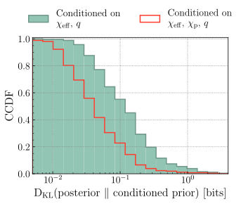
图注：GWTC-5中超出有效自旋参数的组分自旋信息之互补累积分布：实填直方图表示超出χeff的信息，红色阶梯直方图表示超出χeff与χp的信息；两类条件化均同时包含质量比q。信息差以比特计，表示完整四维组分自旋后验相对于相应条件化先验的KL差异。来源：Plunkett等，arXiv:2610.18973v1原图2。
怎么看这张图：这是信息差的互补累积分布，而非自旋参数分布。实填线对应超χeff信息，红阶梯对应超χeff和χp信息，均含质量比条件；0.25比特是经验门槛，不是显著性检验。 最直接展示259事件的压缩信息损失，避免以个别极端事件替代群体结果。
来源与置信度：arXiv HTML；source verified；https://arxiv.org/html/2610.18973v1/spinformation-distribution.svg
5. Identity Crisis: Untangling Mass-Ordering Artifacts from Compact-Object Pairing in Gravitational-Wave Populations
- 来源：arXiv / astro-ph.HE
- 链接：https://arxiv.org/abs/2610.18962
- 作者：Soumendra Kishore Roy, Asad Hussain, L. A. C. van Son, Maya Fishbach, Carl L. Rodriguez, Will M. Farr
- 公告 / 来源日期：2026-10-15
- 阅读层级：相关简报
- 评分：novelty 8/10，importance 8/10，relevance 6/10，final 8.30/10
- 推荐理由：把质量排序折叠伪影与真实伴星质量尺度分开，GWTC5约50太阳质量结构有明确总体推断增量；个体起源不可由质量唯一识别，待全文核验。
中文题目：双黑洞“主星／次星”会制造什么假象？约50太阳质量尺度仍需物理解释
问题、方法与结论：把双黑洞按质量排成m1≥m2，会把两种物理身份折叠到同一半平面。作者证明：次星质量分布下降更快、偏向等质量，都可能由排序产生，不能直接证明不同演化身份或特殊配对。相反，随m1增加仍保持近恒定m2的内部结构，需要原始群体含有物理质量尺度。对GWTC-5作含测量和选择效应的层级推断，得到该尺度49+9/-8太阳质量（90%可信区间）。
意义与贡献：这项工作把“排序几何”与“形成机制”分开，修正用质量分布直接判定一代／二代黑洞的逻辑。约50太阳质量附近，高m2一侧下降比低侧更陡，等强或更弱的高侧下降在所用模型中受99.45%可信度排斥；这支持非对称抑制，仍不能区分陡峭连续尾部和严格空缺。
可借鉴之处：方法以四类物理配对分布解析排序，再用偏斜正态质量比模型拟合60个高质量事件。样本须满足低误报率，且后验在m1>45、5<m2<70太阳质量区域的概率>0.5；注入模拟同时校正探测和后验切选。上限排除了GW231123，结论不应外推成全体黑洞的硬质量上限。
局限与关注点：阅读形成通道论证时，应优先检查二维结构是否超出排序能制造的范围，而非只比两条边缘分布斜率。本文仍固定自旋分布，并采用单一平滑高质量群体及质量—红移可分模型；要判断尺度属于哪种物理身份，需要联合自旋、红移等信息，质量本身无法恢复被折叠掉的身份。
图2：排序后相同，物理身份仍可不同
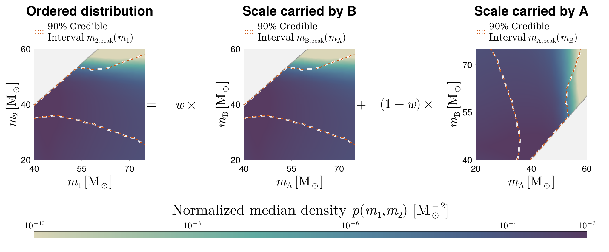
图注：GWTC-5高质量双黑洞群体要求物理标签群体含特征质量尺度，却不能确定由哪颗组分携带。左图为排序质量分布的后验中位数，各次抽样在5<m2<m1<300太阳质量范围内归一；虚线界定固定m1时使并合率密度最大的m2之90%可信区间，中、右图为其反射及标签分配。权重w与1−w将密度分给两种质量顺序；常数权重保留所示水平／垂直结构，质量依赖权重可改变标签结构而不改变观测分布。来源：Roy等，arXiv:2610.18962v1原图2。
怎么看这张图：左图显示约50太阳质量附近近恒定次星质量结构；中、右图通过不同权重把同一分布赋予物理标签，说明质量尺度不可由排序凭空产生，但质量不能唯一指定尺度属于哪种物理身份。 同一图兼顾实测群体结构与本文最重要的不可辨识性结论。
来源与置信度：arXiv HTML；source verified；https://arxiv.org/html/2610.18962v1/Fig2_ordering_degeneracy.png
6. Rotochemical heating of neutron stars in 2D
- 来源：arXiv / astro-ph.HE
- 链接：https://arxiv.org/abs/2610.20423
- 作者：Mikhail V. Beznogov, Jerome Novak, Dany Page, Adriana R. Raduta
- 公告 / 来源日期：2026-10-15
- 阅读层级：相关简报
- 评分：novelty 8/10，importance 7/10，relevance 7/10，final 8.30/10
- 推荐理由：二维GR结构—热—组分演化是明确方法推进；全文显示最强EOS差异来自不合现约束的NL3极端对照且人为关闭directUrca，重要性降至7，保留有边界的简报。
中文题目：二维自转化学加热：中子星热演化的状态方程敏感性如何检验
问题、方法与结论：中子星减速会削弱离心支撑、压缩内部物质，使弱反应来不及维持化学平衡，释放的化学能又能加热恒星。作者把这一过程放入全广义相对论、轴对称二维模型，同时追踪结构、温度和电子／缪子组分，不采用慢转展开。计算比较三种核物质状态方程，发现不同对称能密度依赖可改变晚期加热曲线；这主要是一项理论建模检验，尚未用新温度观测筛选真实状态方程。
意义与贡献：进展在于让自转压缩和组分恢复在同一二维结构中演化，检查过去将红移温度及化学失衡视为空间常数的近似。所算模型在百万年后温度相对变化小于万分之一，但不含扩散时化学失衡仍随位置变化，两种均匀性假设不能混为一谈。
可借鉴之处：可借鉴固定重子数的拉格朗日网格与逐步更新的旋转平衡结构；比较时应分清重子质量和引力质量。三种状态方程的质子分数随密度变化不同，使减速引起的组分调整与热释放不同，提供了检验热曲线变化来源的具体诊断。
局限与关注点：最强差异来自作为极端对照的NL3，其对称能斜率118.5 MeV已不合当前约束。作者还人为忽略直接Urca，即使它在某模型中运动学允许；未纳入超流、核子扩散及更现代反应率。因此图中温差不能直接当作现实EOS区分能力，也不能仅凭二维计算便宣称推翻既有一维结果。
图4：在控制其他条件后比较状态方程
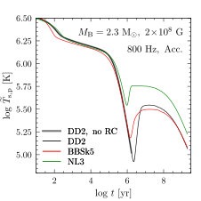
图注：具有相同重子质量、磁场、初始自转频率和包层组分的中子星，自转化学加热下的冷却曲线。横轴为年龄，纵轴为极点的红移表面温度；黑、红、绿曲线比较DD2、BBSk5和NL3核物质状态方程。粗灰曲线为自转频率固定、没有自转化学加热的对照。这里的NL3为极端测试模型，直接Urca过程在所有曲线中均被忽略。
怎么看这张图：先比较三种EOS的彩色曲线，再与不减速的灰色基线比较；NL3是故意选择的极端对照，图中温差不等于现有观测能区分真实EOS。 展示正文核心的EOS敏感性，同时提示极端模型与省略直接Urca的限制。
来源与置信度：arXiv HTML；source verified；https://arxiv.org/html/2610.20423v1/Cool_EOS_Mb=2.3.svg
7. Can bosenovae deplete the galactic dark matter?
- 来源：arXiv / astro-ph.HE
- 链接：https://arxiv.org/abs/2610.20507
- 作者：Samuel Gómez Gómez, Joshua Eby
- 公告 / 来源日期：2026-10-15
- 阅读层级：相关简报
- 评分：novelty 8/10，importance 7/10，relevance 7/10，final 8.30/10
- 推荐理由：对不同宿主重力原子/玻色星爆发的全银河物质耗散作一致上界，排除宏观耗散机制的量级作用；成立条件与非微扰边界需保留。
中文题目：玻色新星能耗尽银河暗物质吗？必须先算循环供料能有多快
问题、方法与结论：假设暗物质全部由具有吸引自相互作用的超轻玻色子构成，恒星附近的引力束缚云或自引力玻色星可积累到临界质量并爆发。作者把捕获、受激增长、爆发后再生和可供给的暗物质通量连成循环，再积分银河恒星及遗骸人口。基准银河中，恒星周围束缚云在百亿年最多耗散晕质量约3×10⁻⁹；玻色星持续从晕中进料的通道约为3×10⁻⁵，两者都不足以整体清空暗晕。
意义与贡献：单次爆发放出多少质量，不等于一整座星系能够持续损失多少质量。本文把供料速率、对象寿命及空间分布纳入同一预算，也区分不断从晕中吸收再喷出的循环，与一开始已接近临界质量的玻色星首次坍缩所消耗的库存。
可借鉴之处：可复用的是先求单对象最大吞吐，再按恒星初始质量函数、形成史和主序／遗骸阶段积分的办法。银河平均损失很低，也不等于核区局部效应或单次可探测信号不存在；较冷、较密的矮星系模型可有更高效率，文中最有利矮椭球模板的循环耗散可到百分之几。
局限与关注点：银心黑洞约千分之一的乐观上界位于微扰增长计算失效区，只是几何供给界，且相应粒子质量受超暗矮星系及恒星轨道限制。玻色星增长率还外推到原数值标定之外，初始库存爆发另依赖形成史；结论约束的是这些设定下的持续耗散，不能推广为全部超轻暗物质模型无可观测性。
图12：银河暗物质持续耗散的三类通道
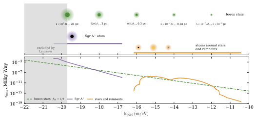
图注：不同玻色子质量下各类爆发通道的汇总。上图示意玻色星、银心黑洞Sgr A*的束缚云，以及恒星与致密遗骸束缚云；横条表示相应通道能喷出暗物质的粒子质量区间。下图在宇宙学约束允许的衰变常数参数f_a范围内，分别求各通道在100亿年内可辐射银河晕质量比例的最大值；玻色星还对其初始质量份额优化，最优约为一半。低于2×10^−20 eV的灰区受Lyman-α约束排除。
怎么看这张图：看下半图时先区分恒星族引力束缚云、银心黑洞与玻色星，再看纵轴是整个银河暗晕百亿年的质量比例。银心的乐观峰值位于几何界/微扰失效区，不能与较受控的恒星族计算等量齐观。 把三种持续供料预算放在同一尺度上，直接回应能否耗尽银河暗晕。
来源与置信度：arXiv HTML；source verified；https://arxiv.org/html/2610.20507v1/fig11_overview.svg
8. Nonlinear Perturbations of Relativistic Stars
- 来源：arXiv / astro-ph.HE
- 链接：https://arxiv.org/abs/2610.18952
- 作者：K. J. Kwon, Abhishek Hegade K. R., Tejaswi Venumadhav, Hang Yu, Nicolás Yunes
- 公告 / 来源日期：2026-10-15
- 阅读层级：相关简报
- 评分：novelty 8/10，importance 8/10，relevance 6/10，final 8.30/10
- 推荐理由：相对论恒星拉格朗日扰动推广到非线性及模式耦合，有4%条件化Love数验证，明确方法推进；不足以把示例精度外推完整动力潮。
中文题目：相对论恒星的非线性潮汐：把流体位移接到模式耦合
问题、方法与结论：线性潮汐把伴星引力看成对中子星的小扰动，接近并合时则需要处理扰动彼此耦合。作者推广相对论流体的拉格朗日扰动，给出任意阶与欧拉扰动的联系，并在非旋转球形背景上构造二阶有源主方程。再将源投影到恒星本征模式，区分模式—模式、模式—外潮汐和两个外潮汐直接驱动三类耦合，使非线性响应可以按具体物理来源组织。
意义与贡献：价值是把牛顿理论常用的受迫振子和模式耦合语言扩展到流体与时空同时变化的广义相对论问题。完整保留时间依赖为研究动态潮汐提供框架；本文实际数值展示仍是静态二次潮汐响应，并未已经给出真实双中子星并合的新波形或可探测相位偏移。
可借鉴之处：应用示例采用SLy4状态方程、1.4和2.0太阳质量恒星，只保留基本流体振荡f模，将静态二次Love数与直接度规匹配比较，约有4%差别。应把这个结果看成受限近似的初步交叉检查，不能解释为任意频率、状态方程和所有模式都已有4%精度。
局限与关注点：本征模内积算子并非正定，模式和被作者明确当作形式展开，尚无严格收敛保证；示例还省略满足二阶哈密顿与动量约束所需的一项，虽其牛顿阶贡献为零，相对论修正仍待计算。构造依赖Regge–Wheeler规范与非旋转背景，应用到旋转星或完整动力潮汐前需继续验证。
图1：欧拉比较与跟随同一流体元的拉格朗日映射
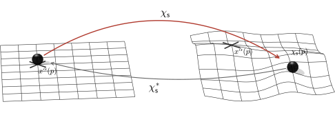
图注：单参数微分同胚族χ_s及其拉回χ_s*的示意。左侧背景时空中，球形标记所示流体元位于点p（叉号）；右侧受扰时空中，同一流体元移动到χ_s(p)。拉回操作将受扰时空中的张量带回背景，以比较同一流体元上的物理量。
怎么看这张图：两侧是不同扰动强度的时空，同一小球代表同一流体元；映射把它从背景点送到受扰后的新位置，拉回后才能比较其物理量。这张图解释形式框架，不是4%数值验证曲线，验证在原文表1。 论文唯一原图，帮助理解任意阶流体扰动映射的基本对象；不冒充结果图。
来源与置信度：arXiv HTML；source verified；https://arxiv.org/html/2610.18952v1/diffeomorphism_map_patch.svg
9. The WDM time-frequency transform in gravitational-wave data analysis II: Evolutionary spectrum and noise covariance
- 来源：arXiv / astro-ph.HE
- 链接：https://arxiv.org/abs/2610.19002
- 作者：Aaron D. Johnson, Katerina Chatziioannou, Robert Rosati
- 公告 / 来源日期：2026-10-15
- 阅读层级：相关简报
- 评分：novelty 8/10，importance 8/10，relevance 6/10，final 8.30/10
- 推荐理由：非平稳噪声WDM演化谱与协方差推导、单实现估计及宽窄带检验具有明确推断方法价值，列简报保留近似条件。
中文题目：噪声随时间变化怎么办？WDM引力波似然给出协方差近似的适用范围
问题、方法与结论：面向长时引力波数据，作者在Wilson–Daubechies–Meyer时频基中建立随时间变化的功率谱与噪声协方差。只有噪声变化比滤波器缓慢时，领先阶协方差才是块三对角；全阶一般可稠密。论文还给出平衡时间变化与频谱斜率的最佳网格，以及忽略相关项的似然误差，说明“改用时频分析”不自动保证噪声独立。
意义与贡献：长时信号会跨过仪器漂移或LISA银河前景的周年调制，平稳噪声假设可能损失有效信噪比并偏置推断。在本文1 mHz单银河双星模拟中，平稳似然的信噪比低12%–24%；源特意放在信号与前景反相关的位置，这个数值不能当成所有LISA源的普适收益。
可借鉴之处：作者比较精确、块三对角、两种对角WDM似然与平稳傅里叶似然。0.98–1.02 mHz窄带的最佳预期对数似然误差约0.044，而0.1–10 mHz达到9.3，显示宽带仍需相关项。时间边界的周期回绕也会制造相关；删边或补零能缓解，补零同时必须变换协方差，不能只修改数据。
局限与关注点：这为长时探测和随机背景分析提供选网格、验近似的定量工具，并给出原始代码。但验证使用高斯噪声模拟，LISA案例固定仪器和前景的频谱形状，只拟合调制与单源；精确协方差还利用模拟已知的包络相位。它尚未解决真实数据中的一般非平稳噪声、非高斯瞬变或完整全球拟合。
图3：优化网格后，对角近似仍可能失效
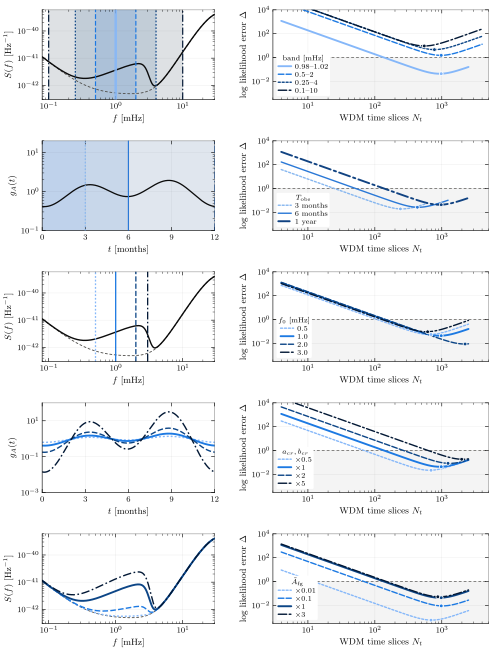
图注：对LISA周期非平稳前景，把WDM协方差近似为对角矩阵造成的预期对数似然误差（式66）。每行左侧表示变化的设置，右侧为误差随时间格数Nt的变化；由上而下分别改变分析频带、观测时长、源频率、调制深度与前景幅度。右图圆点为每条曲线的最小值，灰区对应误差Δ<1；曲线止于分析频带仅剩一个WDM频率格的位置，此时表示相当于带通后的时间序列。来源：Johnson等，arXiv:2610.19002v1原图3；全部为模拟及理论误差估计。
怎么看这张图：右图灰区表示预期对数似然误差小于1，圆点为最佳时间分格。最上行比较频带宽度：窄带可足够精确，宽带即使优化仍超界。此标准衡量噪声模型差异，对具体信号参数偏差是保守诊断，不是直接等值。 同时表达可复用的最佳网格方法与不能外推为全球拟合已解决的边界。
来源与置信度：arXiv HTML；source verified；https://arxiv.org/html/2610.19002v1/loglikeloss_lisa.svg
10. Biases in Ringdown Tests of General Relativity from Gravitational-Wave Microlensing
- 来源：arXiv / astro-ph.HE
- 链接：https://arxiv.org/abs/2610.20201
- 作者：Sreelakshmi Mundakkal Dasan, Anuj Mishra, Apratim Ganguly
- 公告 / 来源日期：2026-10-15
- 阅读层级：相关简报
- 评分：novelty 8/10，importance 7/10，relevance 7/10，final 8.30/10
- 推荐理由：微透镜注入使未加透镜的ringdown检验假偏GR，具体展示模型误设机制和幅度；单类模拟的推广边界需简报说明。
中文题目：微引力透镜可伪造振铃偏离广义相对论的证据
问题、方法与结论：作者用类似GW150914的双黑洞信号，叠加孤立点质量透镜的频率相关放大与相位畸变，再故意用没有透镜的模板分析。96个有效透镜配置在零探测器噪声、固定源参数条件下，分别做合并后振铃和完整旋进—并合—振铃推断。波动光学区的干涉会被模板误当成额外泛音或非Kerr频率：部分注入的十进制对数贝叶斯因子可达40和8；这些数值来自模拟误设模型，并非真实事件发现新引力。
意义与贡献：振铃的频率和衰减时间常被用来检验黑洞质量、自旋与广义相对论的一致性。本文具体展示传播过程也能改变观测波形，因而强烈偏好一个更自由的源模型，未必说明黑洞本身违反Kerr预言。对所测配置，高角向多极模的证据没有出现同样增强。
可借鉴之处：可借鉴先用拟合因子定位模板失配区域，再联合比较振铃与完整波形后验的流程。两个推断分别把合并后网络信噪比调为15、全信号调为30；幅度归一方式及开始时刻会影响比较，不能把两个分析的贝叶斯因子当作同一观测的独立显著性相乘。
局限与关注点：检验仅用一类非进动、近等质量源和点透镜；探测器为设计灵敏度且没有随机噪声，没有给出真实事件中伪偏离的发生率。泛音模型与基模模型还采用不同起始时刻，衰减时间常受先验边界影响。需要更广源参数、复杂透镜和联合源—透镜推断，才能评价现有目录受此效应影响的比例。
图6：漏掉微透镜时对非Kerr振铃的虚假模型偏好
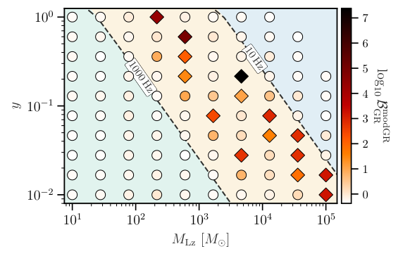
图注：对类似GW150914的微透镜模拟注入，在透镜参数平面上用颜色表示偏离广义相对论振铃模型相对GR模型的十进制对数贝叶斯因子。坐标为红移后的点透镜质量及以爱因斯坦半径归一化的冲量参数；虚线等同图3的特征透镜频率10和1000 Hz轮廓，标出波动光学区的大致范围。部分区域强烈偏好频率可偏离Kerr预言的模型，但该偏好完全由未建模的透镜畸变产生。
怎么看这张图：高贝叶斯因子集中于波动光学区，而所有注入的本征源都来自GR。图说明遗漏传播模型能够制造表观偏离；它不表示已经观测到强透镜，也不提供实际宇宙中的发生率。 直接展示关键系统误差怎样伪造非GR证据，并能与文中受控注入条件一起阅读。
来源与置信度：arXiv HTML；source verified；https://arxiv.org/html/2610.20201v1/TGR_gw150914_fml_contour.png
11. Search for Sub-Solar Mass Binaries in the First and Second Part of LIGO's Fourth Observing Run O4a-O4b
- 来源：arXiv / astro-ph.HE
- 链接：https://arxiv.org/abs/2610.19329
- 作者：Keisi Kacanja, Kanchan Soni, Alexander H. Nitz
- 公告 / 来源日期：2026-10-15
- 阅读层级：相关简报
- 评分：novelty 7/10，importance 8/10，relevance 6/10，final 8.00/10
- 推荐理由：O4a+O4b亚太阳质量独立搜索给出未检出和改进率上限，暗物质分数依赖成对模型，作为有用新约束简报。
中文题目：O4a–O4b亚太阳质量双星搜索：没有显著信号，合并率限制进一步收紧
问题、方法与结论：作者在LIGO O4a与O4b的Hanford、Livingston公开数据中搜索亚太阳质量双星，主星覆盖0.1–2个太阳质量、次星0.1–1个太阳质量，并允许较大的潮汐形变。约3100万个模板被分成26组，以匹配滤波、时移背景和后续参数估计筛选候选，误警率计入分组试验因子。没有候选达到预设显著阈值；合并O1至O4b后，在啁啾质量0.5个太阳质量处，90%置信合并率上限为每立方吉秒差距每年520次，比既有O1–O4a结果约严格2.2倍。
意义与贡献：常规恒星演化难以产生亚太阳质量黑洞，因此这类搜索能检验原初黑洞或其他致密天体的存在。本文的贡献是扩大并加深一个仍未发现可靠事件的参数区间，给出发生率的定量约束。结果不能解释为已经找到亚太阳质量天体，也不能把率上限直接等同于不依赖形成模型的暗物质丰度限制。
可借鉴之处：可借鉴的是把大模板库分组计算、统一处理试验因子，再用注入回收率估计灵敏时空体积，最终把零显著检出转为率上限。作者还纳入单台探测器可用时段，并对非平稳触发额外否决；有限脉冲响应比值滤波减少了海量模板的重复计算，为低质量、长持续时间信号提供了实际计算方案。
局限与关注点：覆盖边界很具体：自旋采用小幅对齐范围，潮汐形变有上限，因此中子星的物理覆盖约止于0.25个太阳质量，不能宣称已完整排查更低质量中子星。原初黑洞解释还要求单一质量分布、早期双星形成及抑制因子假设。文中同一0.8个太阳质量处的有效丰度上限，摘要写0.6%、正文写0.18%，口径待澄清，本简报不采用这组数值。
图3
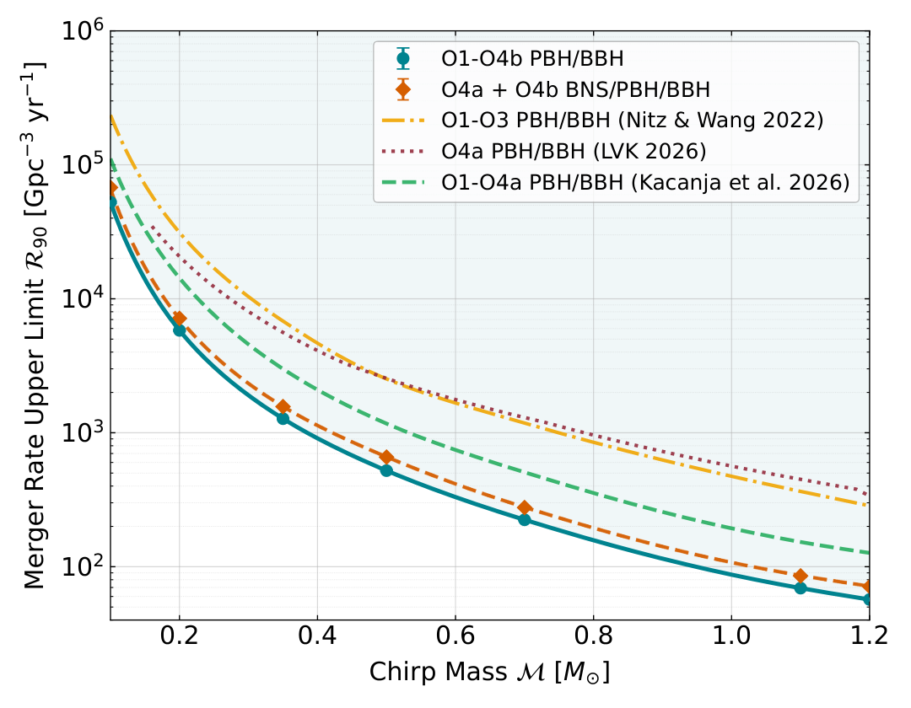
图注：亚太阳质量双星合并率的90%置信上限随啁啾质量的变化。青色实线圆点为O1至O4b累计结果；橙色虚线为本次O4a+O4b符合与单台搜索结果；黄色点划线为既有O1–O3约束；暗红线为重加权到均匀啁啾质量先验的LVK O4a结果。纵轴为每立方吉秒差距每年的合并次数，曲线越低表示约束越严格。
怎么看这张图：累计曲线同时利用历史运行，不能把其全部增益归给O4b。这里限制的是给定质量处的合并率；转成原初黑洞暗物质比例还需质量分布、形成机制与抑制因子。 直接展示可信的主要结果，并避开原文PBH有效丰度摘要与正文数值不一致的问题。
来源与置信度：arXiv HTML；source verified；https://arxiv.org/html/2610.19329v1/upper_lim.png
12. Black Hole Fine Structure
- 来源：arXiv / astro-ph.HE
- 链接：https://arxiv.org/abs/2610.18989
- 作者：Adrian Ka-Wai Chung, Richard Dyer, Tomasz Kinowski, Christopher J. Moore
- 公告 / 来源日期：2026-10-15
- 阅读层级：相关简报
- 评分：novelty 7/10，importance 8/10，relevance 6/10，final 8.00/10
- 推荐理由：轴/极QNM频率分裂的理论无关观测限制是新强场引力检验；无偏离证据及改引力映射模型边界须保留。
中文题目：搜索黑洞振铃的“精细结构”：检验两类扰动是否仍然同谱
问题、方法与结论：真空广义相对论预言，黑洞轴向与极向扰动具有相同的准正常模频谱；某些新引力理论会使这一简并解除。作者把同一双黑洞的完整波形叠加成两支，让它们保留相同的旋近、并合动力学，只改变基频振铃的频率与衰减时间，再分析13个经过信噪比筛选的引力波事件。没有发现稳健的频谱裂分证据；在跨事件共享频谱变形参数的假设下，13事件合并给出相对频率裂分小于28.5%的90%可信上限。
意义与贡献：以往常检验某个振铃频率偏离Kerr预言多少，本文进一步区分“两支一起移动”和“两支彼此分开”。整体移动会与遗迹黑洞质量、自旋混淆，支间差异才更直接对应同谱性的破坏。这提供了一个可以先约束可观测量、再解释不同引力理论的检验框架，但目前结论仍是没有发现新物理。
可借鉴之处：可借鉴的是给两支指定一致的并合时刻和时间网格，联合推断相对振幅及频率、衰减时间偏移，并在合并事件时修正变量变换引入的非均匀先验。作者还把遵循广义相对论的信号注入五种真实噪声实现，发现某些噪声也能产生偏离零的后验或额外分支，说明应同时看模型证据与噪声验证。
局限与关注点：波形假定两支在广义相对论极限下具有相同激发相位，只改变主导的基频模式，并未覆盖任意新理论的完整并合动力学。唯一偏好扩展波形的GW231028_153006已有波形系统误差，表现为整体偏移而非裂分；理论耦合界将其排除。五次噪声注入不足以标定异常值的总体概率，转换出的引力耦合尺度也只是领先阶有效映射，不能当作完整理论后验。
图2
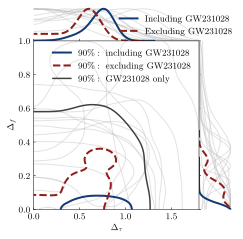
图注：黑洞(2,2,0)准正常模两支之间相对频率裂分与衰减时间裂分的联合90%可信轮廓，以及一维边缘后验。浅灰为各单事件；深蓝实线为全部13个事件合并；深红虚线为排除GW231028_153006后的12事件合并；中央深灰轮廓单独显示该异常事件。合并结果采用跨事件共享频谱变形参数的假设。
怎么看这张图：重点比较蓝线与红线对异常事件的敏感性。频率裂分受到更强限制；衰减时间后验峰偏离零，仍不能脱离贝叶斯模型比较、先验及噪声注入而称作新物理信号。 直接呈现未检出与合并限制，也把异常事件和跨事件假设清楚暴露给读者。
来源与置信度：arXiv HTML；source verified；https://arxiv.org/html/2610.18989v1/splitting_combined.svg
13. A spatial map of the atmospheric limb of a hot Jupiter
- 来源：Nature Astronomy
- 链接：https://www.nature.com/articles/s41550-026-02986-4
- 作者：Lili Alderson, Hannah R. Wakeford, David Grant, Nikole K. Lewis, Avinash Verma, Jayesh Goyal, Mark Hammond, Daniel Valentine
- 公告 / 来源日期：2026-10-14
- 阅读层级：相关简报
- 评分：novelty 8/10，importance 8/10，relevance 6/10，final 8.30/10
- 推荐理由：JWST透射映射给出晨昏及赤道至极区结构约束；正式全文已核24波段、时延校正、交叉验证和反演边界。具有具体方法与行星物理增量，8/8/6=8.30，列为相关简报。
中文题目：WASP-17 b 的大气边缘地图：从晨昏差异走向赤道至极区结构
问题、方法与结论：传统透射光谱把行星边缘平均成一个圆，容易掩盖不同位置的大气差异。作者用詹姆斯·韦布空间望远镜三台仪器覆盖0.6–12微米的凌星数据，以傅里叶形状模型重建不同波长的边缘半径，再在不同角度提取24个波段的光谱。分组交叉验证选择平滑强度，避免把噪声拟合成精细结构。
自由化学反演给出的西侧晨边温度约858 K、东侧昏边约1522 K，温差为664 K，下、上不确定度分别259和449 K；较热处大气尺度高度更大，吸收特征也更明显。水和二氧化碳丰度在误差内与沿边缘不变相容，尚不能说化学组成处处相同。
意义与贡献：价值在于把单一平均光谱扩展为连续边缘结构约束，并与此前昼夜发射观测相互比较。温度对尺度高度的影响能解释主要光谱变化，而局部辐射对流平衡网格难以匹配昏边特征。这支持动力学输运影响大气的解释，但不是直接拍摄行星，也没有唯一确定完整三维环流。
可借鉴之处：可借鉴的是先校正时间系统误差、再检验空间复杂度的顺序：不同像素读出时间会造成伪不对称，作者按光子计数加权修正；随后把入凌、出凌各分五组，轮流留出检验。对其他依靠时序反演结构的研究，这种思路有方法价值，但需要匹配信噪比、时间相关噪声和真实几何，不能直接套用参数。
局限与关注点：主要边界是南北对称假设、固定轨道和临边昏暗参数，以及空间分辨率提高所付出的光谱降分辨率和误差代价。邻角光谱共享同一条边缘模型，不是独立重复实验。甲烷、二氧化硫和气溶胶参数未被可靠约束；化学梯度仍待更高质量中红外数据检验。上述温差误差也不能直接换算成全局发现显著性。
图2：沿行星边缘的光谱与大气参数
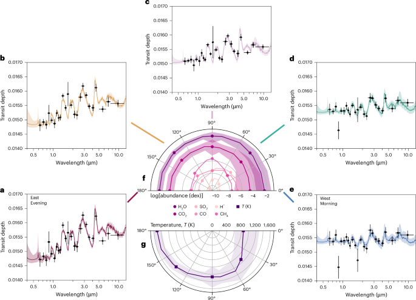
图注：WASP-17 b 的透射光谱随遮挡恒星的行星边缘角度的变化。a–e：以45°为间隔提取的光谱，依次对应180°（a）、135°（b）、90°（c）、45°（d）和0°（e）。凌星深度误差棒表示该角度拟合凌星深度的中位不确定度，波长误差棒表示分箱宽度。每条光谱叠加最佳拟合的自由化学反演结果，阴影表示1σ不确定度。f、g：半圆图展示关键参数沿边缘的变化；对于得到良好约束的参数，数据点为反演中位值、阴影为1σ不确定度，分别为水和二氧化碳丰度（f）以及温度（g）。f中还画出二氧化硫、一氧化碳、负氢离子和甲烷的反演中位值，以展示探索赤道至极区变化的潜力，但这些量并未得到反演的良好约束（见扩展数据图1）。
怎么看这张图：先比较左下红色昏边（a）与右下蓝色晨边（e）的吸收起伏，再看中央下方温度随角度的变化；水和二氧化碳的差异在误差内并不显著。其他分子的曲线只是宽后验的中位值，不能据曲线形状宣称已探测到极区化学增强。 直接呈现空间分辨光谱、温度变化及化学约束边界。
来源与置信度：Nature publisher；source verified；https://media.springernature.com/lw685/springer-static/image/art%3A10.1038%2Fs41550-026-02986-4/MediaObjects/41550_2026_2986_Fig2_HTML.png
说明
评分由 LLM 给出初评，再由本地阈值策略过滤；IACT、TeV 伽马射线和高能中微子天文学按重点方向处理。